Luke
Sith web de Luc
 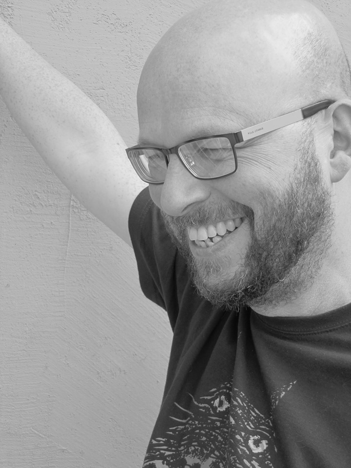
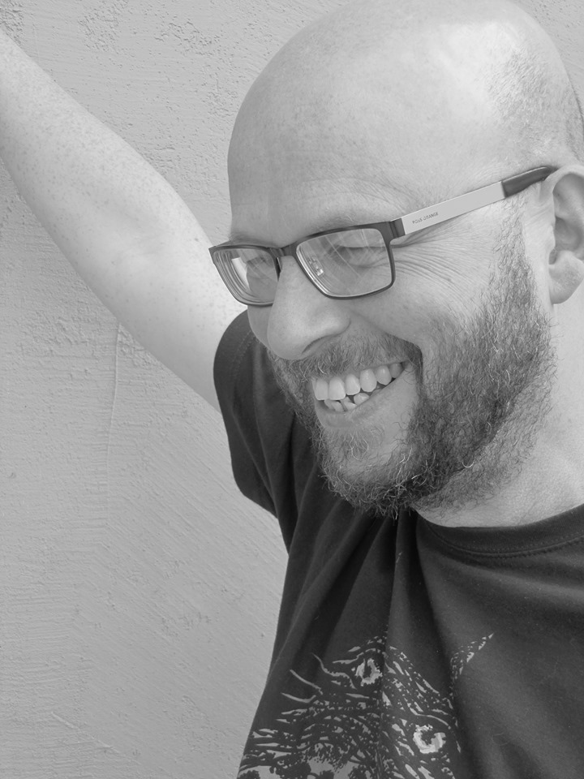
Luke Skywalker
Luc Brunschwig
Naît le 03 septembre 1967, à Belfort, dans une famille modeste où rien ne le prédestine à devenir auteur de bande dessinée.
C’est son jeune frère Yves, qui le premier se met à remplir ses cahiers de brouillon avec les aventures d’un extra-terrestre nommé TAKOR. Luc, de deux ans son aîné, lui emboîte le pas.
Tout se concrétise finalement en 1990 lorsqu’il rencontre le dessinateur Laurent Hirn auquel il propose le scénario du Pouvoir des Innocents.
Depuis 30 ans, maintenant, Luc Brunschwig développe un univers très personnel où faits de société et personnages aux psychologies très approfondies se marient dans des récits humanistes où les personnages semblent être en quête de leur place et de ce qu’ils peuvent apporter à la société.
Il vit en compagnie de sa femme, de ses deux enfants, d’un chat roux et d’un chien qui se prend pour un poney.
Bandes dessinées
Interview
• Luc, nous nous étions déjà croisés pour un excellent entretien il y a déjà 8 ans, et nous ne reviendrons pas sur ce que tu nous as dit à l’époque, ou alors, si peu. Mais nous allons parler de l’ensemble de ta carrière, qui atteint le quart de siècle en cet automne 2015. A cette occasion, tu as entamé sur la page Facebook qui t’est consacrée une sorte de mémoire sur cette carrière…
Oui, je voulais revenir aux sources... partager avec mes amis Facebook et les gens qui me suivent sur ma page pro la mémoire de toutes les choses qui m'ont poussé vers ce métier (à commencer par mon frère Yves, qui le premier a pris les crayons pour faire de la BD alors qu'il n'avait que 6 ans).
C'est surtout une façon d'essayer de comprendre comment un garçon timide, complexé par son physique, mais aussi par une vraie angoisse vis à vis du monde extérieur (on me traiterait aujourd'hui de « geek » ou on dirait que j'étais atteint de « légères » phobies sociales) a réussi à s'extraire de sa timidité, de ses névroses pour transpercer le miroir et faire de son rêve une réalité.
Ceci dit, j'ai beau essayer de comprendre, je n'arrive toujours pas à m'expliquer comment un garçon si peu actif a pu attirer sur lui autant de chances (une rencontre avec Ciro Tota à 18 ans, une autre rencontre décisive avec Laurent Hirn à 21 ans) qui lui ont permis de signer un premier contrat professionnel à l'âge de 22 ans ?... Sérieux. Je me croiserais aujourd'hui dans la rue, je me collerais des claques tellement j'étais replié sur moi-même et pataud.
Et puis, c'est ridicule quand on y pense. Qu'est ce qu'on sait de la vie et du monde à 22 ans ? Et pourtant, c'est l'âge où j'ai écrit le tome 1 du Pouvoir des Innocents, qui avait l'ambition de parler de la société moderne et des maladies qui la rongent.
Peut-être ai-je réussi à parler de tout ça parce que j'étais moi-même malade de cette société. C'est une hypothèse.
Sans certitude.

• Ce qui m’a frappé, encore plus fait sourire, c’est les œuvres que tu cites. Par exemple tu parles de Spider-Man, dont tu as découvert les aventures dans Strange après la série animée. Ou encore Photonik, dessiné par Ciro Tota pour le marché français, mais complètement influencé par les comics de super-héros. C’est surprenant de lire qu’un auteur phare de la franco-belge (bien que cette appellation n’ait plus de sens aujourd’hui) doit en partie sa vocation à des publications venues d’ailleurs…
Oui, bah... je ne sais pas... J'ai démarré mes lectures par les classiques : Astérix, "Tintin"... mais, même si je trouvais ça vraiment bien, c'était juste de super histoires dans lesquels on suivait des personnages qui ne me parlaient pas plus que ça. Juste des silhouettes avec des psychologies sommaires.
Et puis, il y a eu mon premier Strange. Rien n'a représenté le choc et l'addiction qu'ont été les Comics pour moi quand je les ai découverts en 1978. Plus que des aventures, on suivait la vie de personnages qui semblaient presque réels, avec une famille, des amis, une vie privée qui était creusée un peu plus chaque mois. Si tu voulais un équivalent en France à l'époque, il fallait se diriger vers la BD adulte... Alors que là, non... On s'adressait à des adolescents. Des gens comme moi.
On leur parlait de la vie, la vraie, du fait que nos choix impliquent des conséquences sur notre entourage. Moi, ça m'a appris une grande partie des choses à côté desquelles ma timidité me faisait passer : les codes sociaux, la construction de l'adolescent face au monde, les relations amoureuses dans toute leur complexité (eh oui... je parle bien de complexité dans des comics dont on s'empresse pourtant de se moquer, car jugés trop puérils par l'intelligentsia française).
Et puis, surtout, je me suis rendu compte que c'était ça, la BD qui m'intéressait... Parler des gens, de leurs relations, de leurs choix...
C'est toujours ces thèmes qui guident mon écriture aujourd'hui.

• Comme tu le dis, c’est lors d’une visite des studios Lug que tu rencontres Tota, qui cherchait quelqu’un pour reprendre les scénarios de Photonik. Une expérience quasi mystique, non ?
Ho oui. Quelle émotion ! J'étais venu rendre visite aux Editions Lug parce que dans le cadre d'un cours de distribution (je démarrais à l'époque des études en publicité et marketing), on devait analyser la stratégie commerciale d'une entreprise. Je ne m'attendais pas une seconde à tomber sur Ciro Tota. Pour moi, ce mec était un dieu. Il était français. Il faisait du comics et pas n'importe quel comics : un des trois meilleurs existant tout super-héros confondus. J'adorais ses personnages : Thaddeus, Doc Ziegel et Tom Pouce, trois âmes cabossées, maltraitées, qui pourtant jugeaient plus important de rendre la justice plutôt que de profiter de leurs pouvoirs pour malmener les gens qui les avaient déconsidérés, méprisés, torturés.
C'était inscrit dans un quotidien très rude et pourtant c'était noble, puissant et Ciro était un dessinateur hors pair... Un garçon qui a su créer un style graphique parfaitement identifiable. Je le place à égalité avec les grands stylistes de la BD que sont Giraud ou Hermann.
Alors quand il m'a proposé de reprendre le scénario de Photonik, j'ai senti la main de Dieu se poser sur moi. J'ai arrêté mes études et j'ai écrit. J'ai écrit, jusqu'à ce qu'il juge une de mes histoires suffisamment maitrisée pour être présenté à son Boss. Mais le prix de planche qu'ils m'ont proposé (12 euros la planche pour le scénario) m'a paru tellement ridicule malgré toute mon envie de collaborer à Photonik que j'ai préféré dire non.
J'ai osé dire non. Ça paraît fou, avec le recul, mais je trouvais vraiment leur proposition totalement indécente. De toute façon, 6 mois plus tard, Ciro m'apprenait qu'ils arrêtaient le production de séries de super-héros françaises, jugées trop onéreuses.
Trop onéreuses à 12 euros le scénario par planche ? On croit rêver.
• …et trente ans plus tard, tu t’apprêtes à réellement donner une suite à Photonik, avec comme partenaire graphique Stéphane Perger. Tota était fatigué ?
Ha non. Pas fatigué. Mais Ciro n'est pas l'homme d'un seul personnage. Il est d'ailleurs, en ce moment même, en train de mettre un terme à l'histoire de « son » Photonik.
Il va raconter sa dernière aventure aux éditions Black and White et après, il souhaite tourner la page et partir vers de nouveaux défis. Par contre, ça a l'air de l'amuser que je reprenne le personnage et que je fasse « mon » Photonik, maintenant que le sien est allé au bout de son voyage. J'imagine que le fait que mon intérêt pour le personnage date d'une trentaine d'années, que Ciro m'a vu sortir du néant pour devenir un scénariste reconnu par la profession, le rassure sur ce que je suis capable d'en faire.
C'est pourquoi, il s'agira avec le surpuissant Stéphane Perger, de recréer le héros visuellement, mais aussi de lui inventer un parcours différent mais cohérent avec l'héritage de Ciro. J'ai envie de parler du Photonik que j'ai cru voir dans les interstices des histoires de son créateur. Le rendre plus ambigu, plus réaliste aussi. Montrer comment d'un des êtres les plus méprisés et ignorés de l'humanité, on devient un être de lumière, charismatique vers lequel tous les regards se tournent... Montrer aussi l'empreinte que peut laisser sur le monde un personnage d'une telle puissance.

• Tu es quelque part, un repreneur en série, puisque tu avais redonné, le temps de quelques aventures, vie au personnage de Mic Mac Adam…
Tu sais, en tant que fan de Comics, je n'ai vraiment pas de souci avec l'idée de travailler sur des personnages que je n'ai pas créés (Mic Mac Adam, Sherlock Holmes, Bob Morane ou Photonik). Au contraire, je trouve que c'est formidable de s'appuyer sur des univers déjà existants pour y apporter sa petite note personnelle. Il faut juste que ces univers nous permettent d'exprimer quelque chose qui nous est intimement lié.
S’il s'agit juste de copier un univers à l'identique, s’il ne faut pas bouger une virgule dans la façon d'aborder les persos et leur écriture, ça n'a aucun intérêt pour moi. On a vraiment un souci avec ça en France. La plupart des reprises ne sont que des copiés-collés de ce que le créateur a fait, en moins bien évidemment, puisqu'il n'y a pas d'enjeu personnel.
Les grandes reprises aux USA ont été faites par de grands auteurs qui non seulement ont apporté leurs obsessions, leurs thématiques dans l'univers d'un autre, mais ont surtout recontextualisé les personnages afin d'en faire des héros de leur temps.
Quoi de plus moderne qu'un Batman alors que Batman a plus de 75 ans ?
• Tu n’as aucune formation en écriture ni en bandes dessinées, tu as écrit certains des titres les plus marquants de ces 25 dernières années, et tu es même devenu directeur de collection chez Futuropolis pendant quelques temps… Pourquoi avoir quitté cette fonction ?
Je l'ai quittée à regret je t'assure. Travailler avec des auteurs sur des univers que je n'ai aucune chance à titre personnel de visiter, mettre avec eux les mains dans le cambouis, aider à élever la qualité d'un projet, c'est un privilège immense.
Mais soyons honnête, la collection 32 que j'avais lancée à l'époque a été un four complet. J'ai un temps continué de travailler sur des albums plus classiques, mais c'est une époque où Futuropolis souhaitait réduire la voilure, sentant bien que plus de 4 sorties par mois était ingérable pour eux. On était 4 directeurs de collection et Sébastien Gnaedig, le directeur éditorial de Futuro voulait revenir de 60 titres l'an à 42... Il m'a semblé que c'était à moi de me retirer et de retourner à temps plein à mes activités de scénariste.
Mais je t'assure que ça ne s'est pas fait sans regret profond, ne serait-ce que parce qu'en tant que directeur de collection tu as vraiment l'impression d'être utile à ton métier et à des gens qui vont être publiés parce que tu as porté un regard bienveillant et enchanté sur leur travail.

• L’histoire de l’édition du Pouvoir des Innocents est particulière, puisqu’en quelque sorte, elle t’a permis de voir la duplicité des éditeurs envers les auteurs…
Hahaha ! Oui. On a eu la chance avec Laurent Hirn, à une époque où les maisons d'édition n'étaient vraiment pas en recherche de nouveaux talents, d'intéresser les 6 éditeurs qu'on est allés voir avec notre dossier du Pouvoir des Innocents. Un jeu de concurrence s'est installé entre les différents directeurs de collection, qui se sont mis à déballer sur les méthodes de leurs concurrents et nous ont fait un petit cours express sur les clauses contractuelles qu'il fallait faire sauter ou changer pour avoir un contrat réellement à notre avantage et non à celui exclusif de l'éditeur.
Dans ce petit jeu de dupes, on a aussi découvert que si un éditeur vous jure ses grands dieux que le prix de planche qu'il vous propose ne peut être réévalué, ça n'est vrai que le temps que son concurrent propose mieux et plus.
C'est vraiment une des choses dont les jeunes auteurs sont le moins conscients. Un contrat, surtout sur une série, engage leur bien-être sur des années, des décennies, voire carrément sur toute une vie si la série est un succès. Un mauvais contrat, mal négocié, et ce sont des années à bouffer de la vache enragée alors que leur vie pourrait être bien plus douce, s’ils avaient été mieux informés des choses à faire et des choses auxquelles il faut s'opposer avec fermeté.
• La BD t’a servi, en quelque sorte, de révélateur, puisque tu étais quelqu’un de timide, pas très ouvert au monde… Et l’écriture t’a permis de l’appréhender, ce monde, de le rencontrer. La période difficile, psychologiquement parlant, que tu as traversée il y a quelques années, est-elle liée à ce rapport au monde ?
Oui, oui, clairement lié. Je crois qu'à un moment, j'ai réalisé que la BD m'avait permis de repousser tous les murs que j'avais érigés autour de moi quand j'étais gamin. Fini la timidité. Fini les complexes. J'étais un auteur comblé, un père de famille heureux, un être aimé par une compagne formidable. Je n'avais plus peur des gens, du monde. J'étais libre, enfin. Mais qu'est-ce que je faisais de cette liberté ? Je restais cloîtré chez moi, au fin fond de la campagne, à ne voir personne et à ne fréquenter que des personnages de fiction qui me bouffaient la vie au lieu de me laisser vivre la mienne.

Il a donc fallu que je rééquilibre le professionnel et l'intime, que je me sociabilise un peu plus, que je laisse les autres pénétrer ma bulle pour retrouver un peu de plaisir à respirer jour après jour.
Bon dit, comme ça, ça a l'air simple ; Mais ça a pris un temps qui m'a paru infini (3 ans, en réalité) et surtout, je crois qu'à la conclusion, j'ai compris que la BD, en me permettant de comprendre le monde et d'en parler avec mes lecteurs, faisait de moi ce que je suis profondément. Sans elle, je serais différent, mais pas sûr que la différence me plaise. Donc, aujourd'hui, j'écris et je n'ai plus de doute sur ce besoin. Il me prive de certaines choses mais m'apporte tellement qu'il est hors de question que je renonce à lui.
• Quelle est pour toi l’utilité d’un site comme bdtheque ?
Il y a quelques années, je t'aurais dit : savoir si les gens ont aimé notre travail.
Mais avec les années, je sais que tout le monde ne peut pas aimer de la même façon et intégralement un même travail. C'est donc plutôt la façon dont les gens, dans leur diversité, vont appréhender mes univers qui m'intéresse aujourd'hui.
Je sais aussi que les gens qui me connaissent bien attendent certaines choses de moi (une profondeur des personnages et de l'histoire)... et je vérifie donc par votre intermédiaire si la mission a été remplie (ou pas).
• Parmi les séries que tu cites sur ta page facebook, tu parles de « Notre Père »… Or, sauf si mes renseignements sont faux, aucune de tes séries ne porte ce titre. Ou alors, peut-être a-t-elle été renommée ? Et dans ce cas, pourquoi ?
En fait, « Notre Père » est un projet que j'espère signer dans l'année qui vient. J'ai un dessinateur associé à ce projet, mais pour ne pas lui porter la poisse, je vais garder son nom par-devers moi. C'est un projet bien barré ayant pour personnage central un sociopathe qu'on ne voit jamais mais qui écrit des lettres à ses « enfants ». C'est un thriller psychologique bien noir qui se passe en France et qui pour l'instant a bien glacé le sang de ceux (très rares) qui l'ont lu.
Une grande partie de mes futurs projets sont comme ce « Notre Père », déjà écrits ou en train de mûrir dans ma tête depuis des années.

• Tu as donné non pas une, mais deux suites à ta première série, Le Pouvoir des innocents, avec Les Enfants de Jessica et "Car l’enfer est ici". Il y avait donc un goût d’inachevé… Ou un besoin de raconter le monde qui t’entoure ?
Quand nous avons fini le Pouvoir des Innocents en 2001, après 12 ans de travail sur cette série, nous n'avons pas pu le faire sans essayer d'imaginer les conséquences de ce que nous avions mis en place... C'était amusant et intéressant d'essayer de voir comment les USA, nation profondément individualiste et de droite, allait vivre le fait d'avoir Jessica Ruppert – une humaniste venant de la société civile - à la tête de l'une de ses plus grosses métropoles, l'une des plus emblématique. En plus, nous avons fini l'écriture du Pouvoir quasiment le jour des attentats du 11 Septembre. C'était très troublant alors que nous parlions dans notre fiction d'un attentat, de nous trouver confrontés à une réalité qui rejoignait ce qu'on avait imaginé.
Nous avons donc eu envie de continuer de parler du monde, de son évolution à travers deux histoires. La première, le cycle 2 intitulé Car l'Enfer est Ici, créée le choc entre notre attentat de fiction et la réalité des attentats du 11 septembre, par le prisme des personnages et des enjeux politiques que nous avions mis en place dans le cycle 1.
Les attentats du 11 Septembre ont bouleversé la géopolitique des 15 années suivantes. Notre perception de l'Islam. Nous sommes toujours dans les conséquences de ce qui s'est passé ce jour-là et nous ne sommes pas près d'en sortir.
La seconde histoire, le cycle 3 intitulé Les Enfants de Jessica, parle davantage des conséquences catastrophiques de la guerre en Irak sur les USA et de la crise économique qui s'en est suivie et qui a détruit la vie de millions de gens, même si on a tendance à distinguer ces deux fondamentaux de l'histoire américaine contemporaine, pour ne pas laisser entendre que la guerre en Irak a plongé le pays dans la crise et l’a contraint à se vendre à d'autres pays (comme la Chine) pour financer un conflit absurde que les USA ont perdu non sans conséquences majeures pour eux et les pays du Moyen Orient.
• Un autre des cancers qui ronge les USA est la libre vente et circulation des armes. Barack Obama semble décidé à lutter contre ce fléau, mais le lobby de la NRA, entre autres, ne semble pas prêt à lâcher l'affaire. Tu n'aurais pas envie de traiter le sujet dans une autre éventuelle suite ou une nouvelle série ?
Sincèrement, je suis plus inquiet des nouvelles technologies qui sont en train de pointer le bout de leur nez. La possibilité pour tout un chacun de pouvoir acquérir un drone qui peut être porteur d'une mini-charge explosive me semble aujourd'hui plus inquiétant que la vente libre des armes (même si je ne suis pas contre une législation). Mais si Barack Obama arrive à légiférer sur les armes, je sais d'avance qu'il ne fera rien pour réglementer les drones qu'il a lui-même exploité à outrance durant ses 8 années de présidence... Eh oui, le leader du monde libre, prix Nobel de la paix, a fait assassiner durant cette période des dizaines d'opposants par des machines sans jugement, en toute illégalité et sans que ça ait la moindre conséquence sinon accentuer la colère des pays visés par ses machines tueuses.

• Une autre de tes séries emblématiques, La Mémoire dans les poches, devrait connaître son dénouement dans les mois, ou les années à venir, alors que tes fans n’y croyaient plus…
Oui. Le tome 3 va sortir courant 2017. La Mémoire, c'est sans doute ce que j'ai écrit de plus proche d'une autobiographie. En tous cas, c'est une histoire que j'ai imaginée en ayant tout le temps en tête la personnalité de mes parents et les rapports que nous avons eus durant toute mon adolescence.
Quand j'ai attaqué le tome 3 qui parlait de la mort du héros (Sidoine) en miroir de la propre mort de mon père, je l'ai fait la fleur au fusil, pensant que les années écoulées depuis le décès de mon papa m'avaient permis de digérer cette perte.
Bon, ben à l'évidence, c'était une grossière erreur bien stupide, pour ne pas dire plus, puisque c'est en essayant d'écrire ce tome 3, que j'ai sombré dans la dépression, il y a 6 ans. D'habitude, je laisse mon imagination explorer toutes les pistes possibles puis je reconcentre tous ces éléments dans un récit, éliminant beaucoup pour me frayer un chemin qui va permettre aux lecteurs de suivre agréablement une histoire en exprimant toute sa complexité de façon simple et addictive.
Ben, sur la Mémoire 3, impossible de procéder à cette concentration des données. Impossible de me frayer un chemin dans un récit qui ne cessait de s'étendre devant moi. Je me suis perdu dans mon histoire et ça a contaminé toutes mes autres histoires. J'étais devenu incapable de me mettre à ma table de travail sans ressentir une pression qui s'accompagnait de crises d'angoisse de plus en plus fortes.
Comme je le disais plus haut, il m'a fallu 3 années pour analyser les vrais raisons de ces crises et sortir de l'ornière. Puis, dans un premier temps, il n'a plus été question de retoucher à la Mémoire 3, de peur de replonger dans l'abîme.
Mais voilà... Je me suis remis à ce tome 3 il y a 5 mois. Et j'ai déjà rédigé 40 des 70 pages prévues. L'histoire vient naturellement, j'ai déjà ébauché toutes les étapes menant à la fin. Je crois qu'on peut être confiant.

• Comment Urban Games est-il devenu Urban ?
Haha ! Là encore, ce n'est pas une histoire très simple. Au démarrage, Urban s'appelait Sin City, une histoire que j'avais commencé à imaginer quand j'avais 15 ans en écoutant la chanson éponyme de AC/DC.
Cette histoire ne m'a jamais quitté. J'en ai écrit une première mouture en 1991. Ca a été le second scénario que j'ai proposé aux éditions Delcourt après la signature du Pouvoir des Innocents, celui qui a assis la conviction que j'en avais dans la culotte, puisque tout le monde trouvait que le récit était aussi dense et bien charpenté que le Pouvoir. Par contre, c'était une évidence pour moi que mon Sin City – Urban Games – Urban avait besoin d'un dessinateur au talent rare, tant aucun des différents aspects traités par l'histoire (technologie, psychologie, architecture) ne devait être négligé. Ben ce dessinateur, je l'ai trouvé dans un premier temps en Jean-Christophe Raufflet, dans une première édition de l'histoire qui s'appelait URBAN GAMES (les Humanoïdes Associés en 1999)...
Enfin, quand je dis que je l'ai trouvé... Malheureusement, ce que je craignais s'est réalisé. L'aspect graphique était si lourd pour un dessinateur dont ce n'était que le premier album, qu'il n'a jamais eu la force d'attaquer le tome 2.
Urban Games est devenu une de ces séries sans suite qu'on espère plus ou moins ressusciter un jour. D'ailleurs, régulièrement, je retravaillais le scénario, le rendant plus sombre, plus cohérent, plus tendu, avec des personnages mieux définis. Et puis un jour, en 2008, je crois, Roberto Ricci, qui cherchait un scénario à illustrer, m'a demandé si j'avais quelque chose dans mes tiroirs. Je lui ai envoyé Urban Games, convaincu qu'il allait très vite en mesurer les difficultés et qu'il me dirait non. Sauf qu'il m'a dit oui et que tout ce qu'il a fait après prouvait qu'il avait très bien compris l'enjeu et surtout qu'il était bel et bien l'homme de la situation.
On a rebaptisé la série Urban et si elle n'a pas encore le succès qu'elle mérite, il faut bien avouer qu'elle suscite dans la profession un intérêt assez rare, qui m'enchante.

• En ce mois d’octobre sort également le nouveau tome d’une autre de tes séries emblématiques, à savoir Holmes. Peux-tu nous raconter sa genèse ? Pourquoi avoir voulu faire une « nouvelle » version d’un personnage déjà archi-connu ?
Avec Cecil, nous sommes des fans de Sherlock Holmes depuis notre adolescence... Nous sommes aussi amis et ça nous a très vite démangé d'utiliser ce personnage dans une histoire commune. Mais soyons honnêtes, nous étions conscients qu'essayer de réaliser une histoire de Sherlock Holmes à la manière de Sir Arthur Conan Doyle, son créateur, nous poserait très vite un vrai problème car nous n'étions en aucune façon des spécialistes de l'Angleterre victorienne. Or, si Sherlock parvient à décoder son époque, c'est justement parce que c'est une époque extraordinairement codifiées. S'habiller de telle façon renvoie immédiatement à telle classe sociale. Porter la barbe taillée de telle façon renvoie à tel métier. Bref, autant de détails extrêmement précis dont nous n'avions pas la connaissance. Donc à oublier.
On s'est recentré sur ce qu'on maîtrise à peu près correctement. Mon domaine de prédilection, c'est la psychologie des personnages. Ce qui les a construits. Ce qui fait qu'ils sont ce qu'ils sont.
On s'est donc dit que le mieux était alors peut-être d'explorer ce qui fait la personnalité de Sherlock Holmes sous la forme d'une enquête que mènerait un détective aux capacités de déduction plus à notre portée : le docteur John Watson.
La personnalité du détective fascine les gens (et son compagnon d'aventures) depuis toujours. D'autant qu'on sait très peu de choses sur son passé.
Avec une morgue et une prétention sans borne, nous avons donc décidé de fournir à des générations de lecteurs les clés pour comprendre Sherlock Holmes. Parce que nous avons découvert un élément, un seul, qui permet d'expliquer presque tout ce qui a forgé son étrange personnalité.

• Cela doit être un plaisir de travailler avec un artiste de la trempe de Cécil…
Au-delà même du plaisir, c'est de voir Cécil recréer une époque, cette Angleterre victorienne, mais aussi l'Europe de la seconde moitié du XIX e siècle qui rend la collaboration complètement fascinante. On y est. On touche à une vérité visuelle et émotionnelle qu'on a eu peu l'occasion de rencontrer dans les adaptations en BD de Sherlock Holmes.
Créer une histoire forte dans un cadre visuel complètement crédible avec un artiste qui en plus a une vraie passion de la justesse des personnages, de leurs gestuelles, de leurs mimiques, c'est un pur bonheur.
• La série est-elle toujours prévue en 7 tomes ?
Nous étions partis sur 7 tomes à l'époque où nous avions fait le choix de fascicule de 32 pages très denses en termes de lecture. Depuis le tome 3 nous sommes passés à des paginations plus classiques de 46 pages, sans pourtant perdre en densité narrative. Bien au contraire, dirais-je.
On a donc décidé de finir au tome 6, qui lui sera sans doute plus fortement paginé que les autres pour conclure en beauté et sans rien omettre de ce que nous voulions mettre dans cette histoire.
• Et tu n’aurais pas envie de revenir sur des anciens projets, comme Angus Powderhill ?
Il ne faut jamais dire jamais. Je sais que j'aimerais bien retravailler sur Après la Guerre qui contient une histoire et une vision du monde à venir qui m'interpelle toujours autant. Donc Angus Powderhill, pourquoi pas, même si ce n'est pas le récit-fantôme qui me hante le plus.

• Que nous prépares-tu pour les 25 prochaines années ?
Je vais donner des titres. D'ici 8 ans on s'amusera à voir lesquels ont été développés ou pas. Déjà, d'ici 2017 va sortir le « XIII Mystery : Jonathan Fly » que je réalise en ce moment avec Olivier Taduc. Puis outre « Notre Père », mon histoire de sociopathe dont je t'ai déjà parlé plus haut et « Après la Guerre » sur lequel je referais bien un tour, il y a des récits qui me tiennent très fort à cœur comme « 2 Frères », l'histoire de deux frères juifs de 1927 (année où le cinéma est devenu parlant) à 1948, année de la création officielle de l'Etat d'Israël, « Un Nouveau Monde » une uchronie qui prend pour point de départ l'idée que l'Amérique est française et non anglaise, « Holmes 1888 », une préquel à HOLMES 1854-1891, qui parle du lien de Sherlock avec Jack l'Eventreur. Il y a aussi « Petiot Maloy » qui explore l'univers intérieur d'un enfant autiste, « ABIBI » (les aventures du flic de la B.A.C. créé par Laurent, le fils romancier de Sidoine dans la Mémoire dans les Poches).
J'ai d'autres pistes qui ne sont pas aussi développés que celles-ci... mais bon, il y a déjà de quoi bien s'occuper les doigts rien qu'avec ça. Et puis, avec Laurent Hirn, on s'est promis d'écrire et réaliser notre film... donc, on va s'y coller avant d'être des vieux machins gâteux.
• Quel est ton regard sur la BD d’aujourd’hui ? La surproduction, les revendications des auteurs, la BD numérique, la concentration des éditeurs ?
Je vais paraître d'une abominable prétention, mais si mon regard n'est pas très positif sur l'avenir de ma profession, je ne m'inquiète pas outre mesure pour moi.
Pour ce que j'entends et constate, il est clair que la machine va ralentir très très fortement. Pas avec plaisir, parce que beaucoup de talents vont se retrouver sur la touche, mais parce qu'on a atteint le niveau de saturation du lectorat qui fait que la plupart des albums coûtent aujourd'hui bien plus aux éditeurs qu'ils ne leur rapportent.

Et quand les éditeurs perdent beaucoup d'argent, il y a d'office crispation. On risque donc d'assister à une reconcentration de la production autour de quelques gros titres (les reprises de séries à succès) et quelques noms qui sont agréables à l'oreille des lecteurs et des libraires (noms dont je pense faire partie (enfin, on peut rêver)). Les places vont être chères et les prises de risque de plus en plus limitées, j'en ai peur (en espérant faire erreur).
On risque aussi de voir les avances sur droits fondre comme neige au soleil. Quelques éditeurs militent déjà pour qu'on soit payés comme dans le roman, c'est à dire : l'auteur fait son album dans son coin en parallèle d'un autre métier et est payé après la sortie de l'album avec les droits d'auteur que son livre générera une fois mis en vente.
Autant dire qu'il deviendra pratiquement impossible de se professionnaliser dans ces conditions à part quelques chanceux. Et qu'il deviendra de plus en plus rare de trouver des albums avec un beau dessin classique mais chronophage.
Le numérique me semble une solution catastrophique : 1) parce que je ne conçois pas d'économie numérique de la Bande Dessinée (qui est aujourd'hui prêt à payer pour une offre numérique alors que le piratage est la règle alors qu'elle devrait être l'exception ?) 2) le numérique, en permettant une édition sans frais pour un auteur, va encore multiplier l'offre et rendre la plupart des titres invisibles aux lecteurs en confondant des travaux amateurs, semi-pro et professionnels.
• On se le fait, ce tournoi de badminton entre lecteurs et auteurs de BD ?
Oué !
• Luc, merci !
Stories
LE POUVOIR DES INNOCENTS
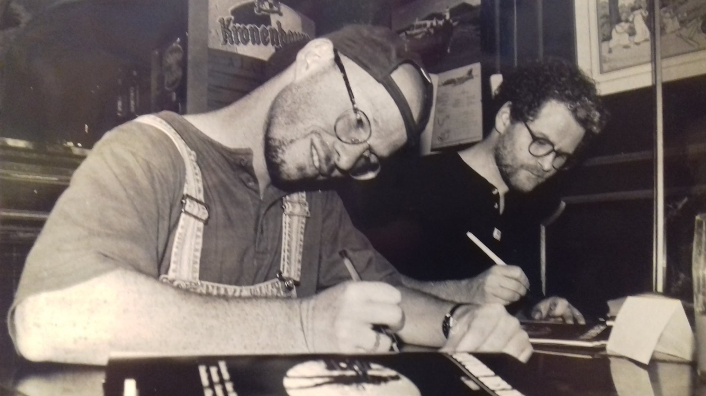Quand j’ai rencontré Laurent Hirn pour la toute première fois (c’était en janvier 1990 à Strasbourg), une chose l’a profondément marqué : le garçon qui se trouvait devant lui, haut de ses 23 années, timide comme une pucelle, souriant à s’en décrocher les zygomatiques et passablement naïf dans ses propos et sa façon d’aborder les gens, correspondait bien difficilement pour ne pas dire pas du tout, à l’image qu’il se faisait de l’auteur du scénario qu’il venait de lire : une histoire de politique fiction bien dark, très professionnellement écrite par un type avec du vécu qui semblait avoir compris pas mal de choses sur le monde et l’humanité dans sa très large acceptation.
Les deux images correspondaient tellement peu qu’il a passé les 8 jours qui ont suivi à se renseigner, essayant de découvrir si je n’avais pas tout simplement repomper le scénario du Pouvoir des Innocents dans un livre, un comics ou un film qu’il n’avait pas vu ou lu…
Mais, non, c’était bien moi qui avais écrit tout ça. Et c’est sans doute dans cette dichotomie d’images entre l’homme que j’étais alors et celui que je voulais être qu’il faut chercher l’envie qui m’a poussé à écrire ce scénario-là et pas un autre pour démarrer dans la bande dessinée.
Faisons un petit voyage en 1990 ? Qui était Luc Brunschwig cette année-là ?
Pas grand-chose à vrai dire. J’étais le fils de deux rescapés de la Shoah qui m’avaient eu sur le tard (mon père avait 40 ans l’année de ma naissance. Rien de rédhibitoire aujourd’hui, mais à l’époque c’était rarissime… un gosse de vieux, comme on disait). Ma mère me surprotégeait, me parlait peu des réalités du monde, évitait que je me confronte à ce dernier en me maintenant le plus possible à la maison. J’étais le gamin hors mode qui a peu d’amis, le nez toujours plongé dans les bouquins, silhouette chétive à toujours éviter le sport et les vestiaires.
J’étais nul en codes sociaux, parfaitement incapable de comprendre les interactions entre les jeunes de mon âge, sans aucune conscience politique et totalement ridicule dans mes tentatives pathétiques pour séduire les filles.
Le monde, je ne le connaissais qu’à travers la télévision (j’ai littéralement grandi à la mamelle du téléviseur noir et blanc qui trônait dans notre appartement) et les bandes dessinées que je dévorais.
Ces Bd, c’était pour l’essentiel des comics (Marvel plus que DC au démarrage) que je préférais à la bande dessinée franco-belge. J’y trouvais ce que je ne trouvais pas dans notre bande dessinée nationale… des personnages complexes qui ne traversaient pas juste des histoires qui leur glissaient un peu dessus mais qui, au contraire, évoluaient, parfois de façon totalement radicale, au fil des événements auxquels ils étaient confrontés.
Quelques années avant de commencer à écrire le Pouvoir des Innocents, j’avais croisé les histoires de deux auteurs de ces comics et tous deux m’avaient littéralement atomisé la tête. J’étais tellement en amour de leurs travaux qu’il semblait évident que si un jour je faisais de la Bande Dessinée, c’était sur le même terrain que je voulais jouer… sauf que…
Sauf que ces deux scénaristes avaient pour noms Frank Miller et Alan Moore et que leur grand talent étaient de mêler des psychologies fortes et nuancées à des contextualisations sociales et politiques pertinentes… bref autant de domaines que je ne maîtrisais absolument pas...
Est-ce que vous croyez que ça m’a arrêté ?
J’aimerai dire ici que j’ai sauté le pas en étant hautement conscient du risque que je prenais de royalement me vautrer… mais je pense plutôt que je ne me suis tout simplement pas rendu compte des problèmes que cela risquait de me poser (le charme de cette naïveté qui m’habitait alors).
J’ai donc commencé à imaginer une histoire qui brasserait tout ce qui me plaisait : des personnalités fortes, une tension de folie, le tout dans un contexte social explosif.
Oui, mais quoi exactement ???
N’étant pas d’un naturel cynique, ne me sentant aucun point commun avec des personnages souhaitant le malheur de l’humanité, pensant au contraire qu’un homme ou quelques hommes de bonne volonté peuvent changer la face du monde, une idée a commencé doucement à germer. L’improbable récit d’une « machination du bien », un groupe d’hommes et de femmes qui rencontrent un jour une femme géniale qui leur ouvre les yeux sur une autre façon de penser la société. Ces gens s’associent alors non pas pour leur propre bénéfice mais par espoir de voir émerger un monde meilleur pour tous ceux qui pourront bénéficier des avancées qu’ils espèrent mettre en place si ils arrivent à installer leur mentor, Jessica Ruppert, à la tête de New-York…
Ça demandait cependant pour arriver à installer cette histoire de maitriser beaucoup beaucoup beaucoup (trop ?) de choses : la psychologie de dizaines de personnages, leurs interactions, leurs évolutions à travers l’histoire de l’Amérique et de ses grandes villes (donc comprendre les USA), inventer une utopie politique crédible qui ne serait pas juste un écho habillant l’histoire mais son moteur principal …
Il a fallu que je pense chaque élément indépendamment pour (dans un premier temps) en comprendre et en maîtriser l’origine et le sens, puis que j’ajuste tous ces éléments dans un mouvement général dans lequel ils entraient tous en interaction pour créer un récit choral convainquant.
Ça aurait dû donner un bouquin au pire indigeste au mieux ridicule de maladresses (d’écriture) et de naïveté (dans le propos)…
Sauf que ça a donné le Pouvoir des Innocents, un récit qui 30 ans après semble (de l’avis de pas mal de monde) avoir prédit l’évolution de nos sociétés occidentales contemporaines.
Pourquoi ça a marché ? Je suis bien incapable de l’expliquer. Je dirais même que plus les années passent et plus je mesure le gouffre au bord duquel j’ai marché avec Laurent Hirn pendant toute la réalisation de ce récit.
J’ai investi cette histoire, bien conscient que j’y entrais avec des centaines voire des milliers de questionnements et quasiment aucune réponse… et que je devais profiter de ce « voyage » pour combler tous les manques que les 22 années précédentes avaient laissés.
L’ESPRIT DE WARREN
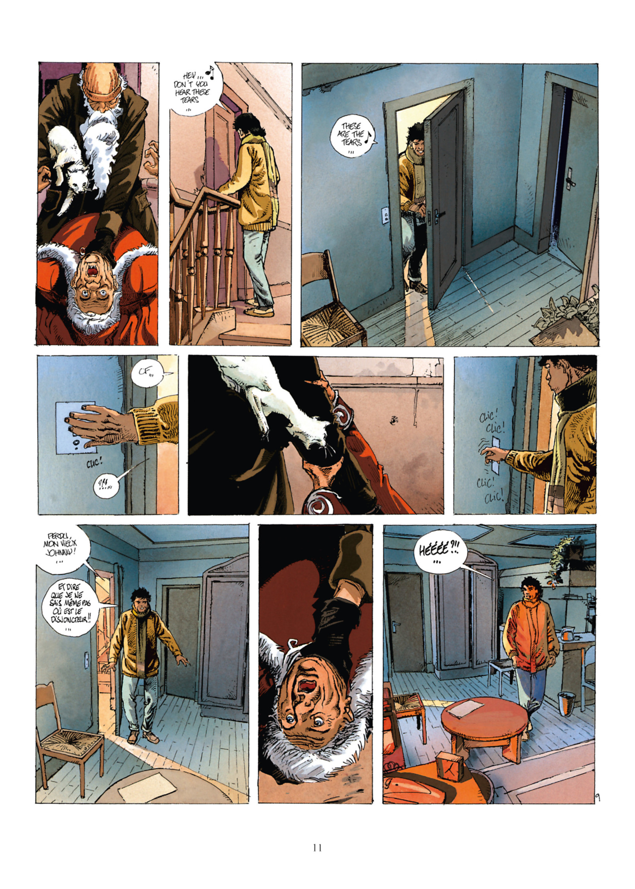
Nous sommes en 1992… depuis plusieurs mois, un ami dessinateur (Gilles Frely) nous parle, avec des étoiles dans les yeux, de la sortie prochaine de ce que les journalistes annoncent déjà comme « le film le plus terrifiant jamais vu au cinéma » : Les Nerfs à Vif de Martin Scorsese.
De Niro y joue le rôle d’un sociopathe qui sort de prison. Un dingue obsessionnel qui décide de retrouver et de tuer l’avocat qui l’a volontairement planté devant la cour et envoyé directement en zonzon.
Le film sort. Je le vois. Et c’est une totale déception. La promesse de la première heure où De Niro file vraiment les miquettes, se dilue dans une traque qui se veut hitchcockienne et moderne mais qui pêche par des personnages irritants dont le sort nous importe peu.
Dommage.
J’oublie le film pendant quelques jours, jusqu’à ce que je reçoive un coup de fil de Laurent Hirn (le dessinateur du Pouvoir des Innocents dont le tome 1 est sur le point de sortir).
Laurent vient de voir Les Nerfs à Vif et il m’en parle pendant plus d’une heure. Il a détesté… mais d’une force… il démonte le film dans tous les sens, en arrivant à la même conclusion que moi : comment vibrer pour des héros si transparents, voire carrément détestables ?
Je suis d’autant plus étonné de ce coup de fil que Laurent exècre ce mode de communication et qu’il est souvent difficile de lui arracher des mots quand on l’a au bout du fil. Mais là non. Il parle et il parle encore, à toute allure, de sa déception, des raisons de celle-ci… l’analyse qu’il en fait est parfaite et je suis tellement triste qu’il soit si déçu et qu’il n’ait pas eu la possibilité de s’enthousiasmer et d’éprouver cette peur qu’on lui promettait depuis des mois, que pour le consoler, j’en viens à lâcher cette phrase absurde : « écoute, je vais t’écrire une histoire de psychopathe qui va te terrifier ! »
Voila ! Une fois que tu as dit ça, qu’est-ce que tu fais, gros malin ?
J’ai commencé par me pencher sur la question centrale : qu’est ce qui me faisait « viscéralement » peur ???
Je venais de découvrir Stephen King, qui réussissait à me terrifier au-delà de tout ce que je croyais imaginable… mais je voulais une histoire de psychopathe crédible… sans intervention du fantastique, quelque chose de bien ancré dans le réel.
Quelques mois plus tôt, j’avais découvert au cinéma le Silence des Agneaux… dans le genre réaliste, personnages ahurissants et glaçants, on ne pouvait pas faire beaucoup mieux. J’étais même sorti de la séance en me disant que c’était exactement ce genre de scénario que j’aurais envie d’écrire un jour.
Je me disais donc que j’allais me diriger vers quelque chose de cet ordre. Mais, je me retrouvais face au même problème qu’au moment de m’attaquer au Pouvoir des Innocents… je n’y connaissais strictement rien en serial-killers.
J’ai donc filé à la bibliothèque et j’ai fait main basse sur tous les bouquins de témoignages sur le sujet. Je n’en ai trouvé que deux… dont un sur l’enquête qui a mené à l’arrestation de Charles Manson et de sa « Famille » après l’assassinat de Sharon Tate (la femme de Roman Polanski) et de plusieurs de leurs amis. La personnalité de Manson était fascinante. Il était décrit comme un être médiocre, mais qui avait développé, afin de survivre en milieu violent, un talent unique pour comprendre qui il avait en face de lui afin d’entrer en empathie avec lui et le manipuler.
J’ai lu aussi les romans de Thomas Harris le romancier à l’origine du personnage d’Hannibal Lecter, le psychiatre cannibale.
J’ai vite réalisé au travers de ces lectures que les serial killers sont le symptôme du visage sombre de l’Amérique, cet espèce d’abandon social qui disqualifie et isole des gamins en grande détresse face à des parents qui les maltraitent physiquement ou psychologiquement, cette animalité et cette violence qui sont sous-jacentes partout dans le pays. Depuis que j’ai commencé à m’intéresser à cette nation, c’est ce « cauchemar américain » bien éloigné du « rêve » qu’Hollywood, les comics et la musique nous ont vendu pendant des décennies et auquel j’ai longtemps adhéré, qui me passionne.
Du coup, je me suis dit que ça pourrait être intéressant de faire de ce récit de tueur en série, un récit sur l’Amérique et les mensonges qu’elle vend au monde entier par le biais de films plus proches d’une certaine forme de propagande que de la réalité.
Pour le mensonge, j’ai pensé que les Amérindiens seraient parfaits et que le tueur pourrait être issu de leur rang… d’autant que le lien avec Hollywood était facile à établir (des décennies d’occultation de leur génocide et de la réalité de ces peuples dans les westerns)
Mais si ça donnait un background intéressant à l’histoire, ça ne lui donnait pas de réelle dynamique. Il fallait que le tueur soit intéressant, pas juste monolithique, qu’on puisse à la fois le détester, être tétaniser de peur à l’idée de ce qu’il était capable de faire subir à d’autres êtres humains et pourtant le comprendre, qu’il soit victime autant que coupable… et en quête d’une échappatoire à sa condition d’assassin plutôt que figé dans cette figure trop classique.
Comme je ne voulais pas d’intervention surnaturelle j’ai joué avec l’idée de conditionnement psychologique, de manipulation, la perte de repères, la quête de soi mais aussi sur l’ambiguïté existant entre la réincarnation et l’incarnation.
En face de lui, il fallait un personnage tout aussi ambigu… un brave type, une victime de ses crimes, qui y aurait échappé et qui ne pourrait pardonner à Warren ce qu’il a fait. Un agneau qui deviendrait loup parce que sa vie a été brisée et par devoir de mémoire envers tous ceux qui ont souffert.
C’est de leurs deux parcours et de leurs rencontres multiples que nait l’énergie de l’Esprit de Warren.
XIII MYSTERY
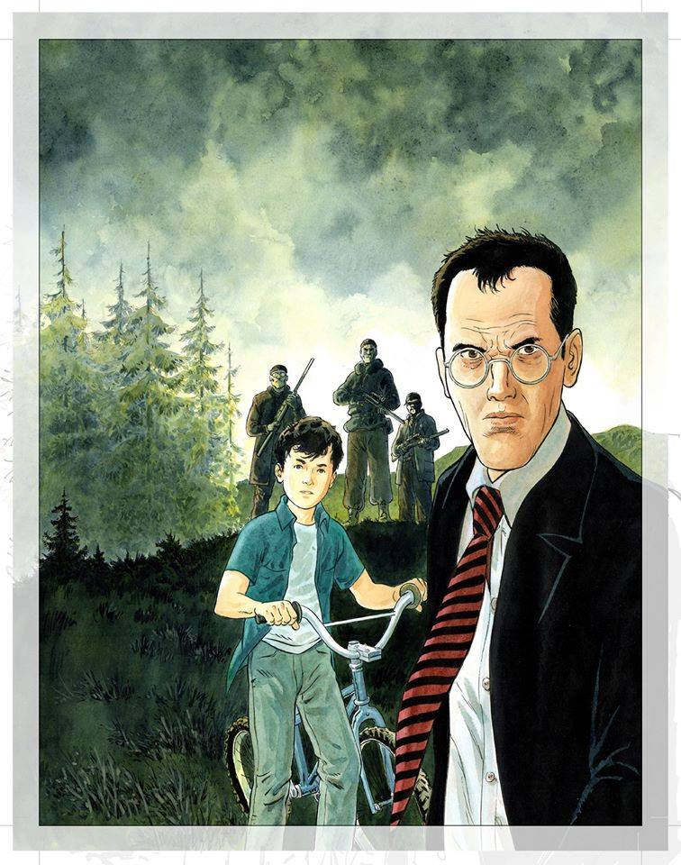
Dargaud vient d’annoncer la nouvelle : Jean Van Hamme et William Vance ont décidé de confier quelques-uns de leurs personnages à différentes équipes scénaristes-dessinateurs pour une collection de one-shot qui s’intitulera XIII Mystery.
Le but de cette collection : approfondir l’histoire de personnages marquant de la série mère, mais qui n’ont pas connu un développement conséquent.
On annonce déjà Dorison et Meyer, Nury et Guerineau, Corbeyran et Berthet… bref, rien que du beau monde.
De mon côté, je viens de finir le Pouvoir des Innocents et L’Esprit de Warren, deux thrillers contemporains. Participer à cette collection semble une évidence à beaucoup de mes lecteurs, qui m’envoient des petits messages complices en me demandant quel personnage je vais choisir ?
Ce qu’ils ignorent, c’est que chez Dargaud personne ne pense à moi pour une de ces histoires. Pas une seconde.
En fait, je suis persona non grata chez cet éditeur depuis quelques années.
Je vous l’ai déjà raconté, lorsque le groupe possédant Dargaud (Media Participation) a racheté Dupuis un vent d’inquiétude et de protestations a soufflé parmi les auteurs maison inquiets de voir l’éditeur de Spirou laminé ou du moins dévitalisé par le nouvel acquéreur.
L’inquiétude était d’autant plus forte que c’était ce qui s’était passé lors du rachat du Lombard par le même groupe. L’éditeur historique du journal de Tintin était désormais réduit à quelques personnes. Bien loin de l’équipe, nombreuse, qui avait fait sa réputation et ses heures de gloire.
A cette époque, je travaillais pour Dupuis (Makabi) et j’ai publiquement pris le parti de ma maison d’édition et de sa direction contre Dargaud.
Cela s’est fait au travers d’une lettre ouverte au directeur de Dargaud où je ne disais pas que du bien de ses méthodes de management m’attirant les foudres de toute la maison.
J’étais devenu tricard au pays de XIII.
Les années passent. Le temps de réaliser les 3 premiers tomes de MAKABI.
Daniel Bultreys, mon directeur de collection est fan de la série. Il travaille aussi avec Jean Van Hamme dans la collection Repérages et a, sur un coup de tête, envie de lui faire lire ce premier cycle enfin complet.
Il lui envoie les trois tomes.
Ce à quoi il ne s’attend pas, c’est le retour réellement dithyrambique de Jean Van Hamme, qui se dit enthousiasmé par cette série. Il va même jusqu’à prétendre que c’est une des meilleures qu’il ait eu l’occasion de lire lors des dix dernières années qui viennent de s’écouler (bon, c’est pas super modeste de le dire comme ça, mais c’est bien ça qui était dit dans le message).
Daniel me communique le mail. J’en suis comme deux ronds de flancs.
Et ne trouve qu’à bredouiller un message de remerciements ému que j’envoie à Van Hamme.
Les mois passent.
J’ai donc le mail de Van Hamme et une envie grandit de plus en plus alors que les premiers Mystery font leur apparition chez les libraires. J’aimerai beaucoup travailler sur la relation existant entre Jonathan Fly, le journaliste d’investigation qui a recueilli le futur XIII et cet enfant qui ne comprend pas trop cet homme un peu froid et distant qui semble avoir voué sa vie à son métier et ne pas avoir de temps pour lui.
Il me semble d’autant mieux comprendre cette relation que c’est ce que je vis au quotidien avec mes deux enfants en bas âge Némo et Nausicaä. Je suis à leurs côtés, jour après jour (je travaille à la maison), et pourtant, mon esprit semble être constamment ailleurs, dans d’autres mondes, bien loin de leurs préoccupations et du besoin qu’ils ont de me voir leur prêter toute l’attention dont ils ont besoin.
Je suis là (physiquement) mais pas vraiment (puisque je travaille d’arrachepied à mes différentes séries). Et je vois que c’est très difficile pour eux de comprendre pourquoi, alors que je suis constamment auprès d’eux, j’ai si peu de temps à leur consacrer.
Ce sont des considérations très adultes et ils sont bien trop petits pour que le message soit compréhensible, d’autant que je me sens vraiment coupable de cet état de fait ; J’espère juste qu’ils n’en souffriront pas trop, mais sans aucune certitude à ce sujet.
J’ai donc envie de travailler sur cette relation que je comprends si bien et que je trouve terriblement douloureuse et déchirante, de parler de cet amour et de cette incompréhension qui grandit entre un père et son fils au point que le gosse en vient à trahir son papa.
Mais comment faire puisque Dargaud ne pense pas à moi ?
Idée : je retrouve les quelques échanges que j’ai eu avec Jean Van Hamme et au culot, je lui envoie un mail lui rappelant qui je suis et lui demandant si il verrait d’un mauvais œil que je fasse un XIII Mystery ?
Quasi instantanément il me répond par la positive et me demande si j’ai un personnage en tête ?
Je sais pour l’avoir lu dans Casemate que Van Hamme refuse que quiconque en dehors de lui raconte la jeunesse de XIII.
Mais je ne me démonte pas. Je lui parle de mon envie par rapport à Jonathan et Jason ?
J’attends à me faire foudroyer, mais j’ai droit en retour, au plus gentil mot qu’on ne m’ait jamais envoyé : « D’accord ! si quelqu’un peut le faire c’est bien toi ! » (je rappelle juste ici que Makabi parlait déjà de relations intrafamiliales et que c’est précisément cet approfondissement des psychologies et des liens entre les personnages qui avaient tant touché Jean Van Hamme quand il avait lu le triptyque).
Je suis prêt à sauter au plafond de joie, mais j’ai une dernière crainte : je sais que je ne suis pas en odeur de sainteté chez Dargaud, très loin de là, et avant de valider notre aventure, je lui avoue qu’il serait peut-être bon qu’il voie avec le patron de Dargaud si j’ai leur feu vert (ou pas).
Van Hamme accepte d’aller plaider ma cause et vous connaissez la suite…
HOLMES
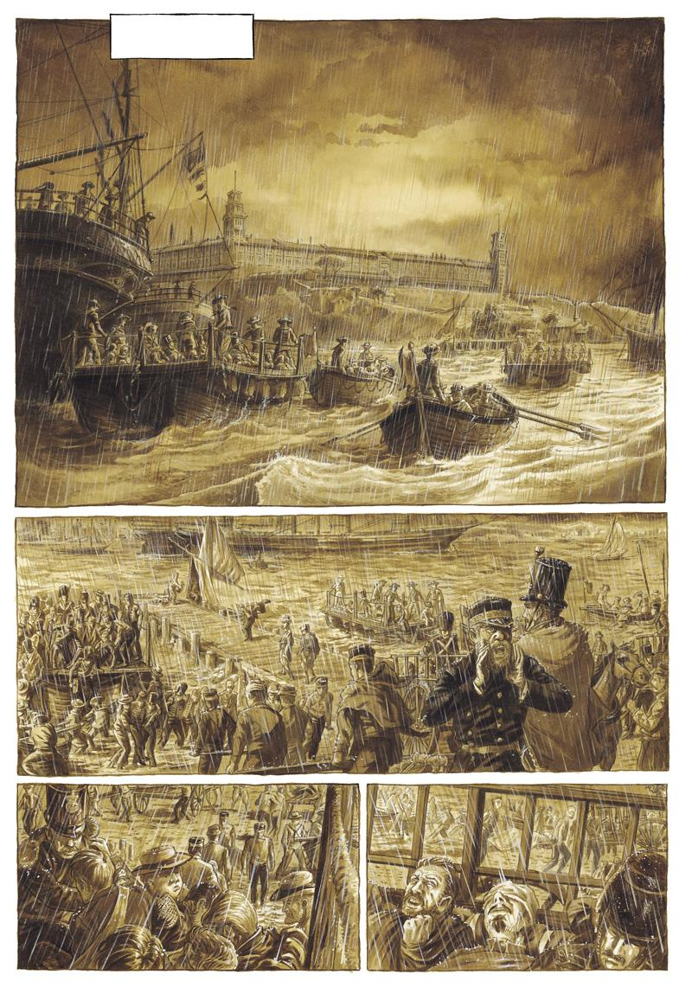Nous sommes en 1985… j’ai 18 ans… et je ne connais alors rien de Sherlock Holmes. Enfin… pas grand-chose : j’ai vu quand j’avais 11 ans le film La Vie Privée de Sherlock Holmes de Billy Wilder qui m’a durablement marqué (les 3 canaris morts, le Monstre du Loch Ness, les Nains qui se font passer pour des enfants et ce final merveilleux avec cette espionne allemande qui envoie un dernier message en morse à un Holmes qui ne semble pas insensible). Et c’est à peu près tout.
Je m’étais juré de m’intéresser plus avant à ce personnage et le moment semble enfin venu : j’ai pas mal de temps libre devant moi (de 18 à 20 ans, j’ai vécu une période un peu floue d’études que j’arrêtais inévitablement à Noël pour me retrouver dans ma chambre d’enfance à écrire ce qui seront les balbutiements de mes premiers scénarios). J’achète donc puis je lis tous les romans et recueils écrits par Sir Arthur Conan Doyle concernant le personnage de Sherlock Holmes, et je me prends cet étonnant bonhomme au cerveau surgonflé et au mauvais caractère direct dans la figure.
A cela s’ajoute la sortie imminente d’un film sur sa jeunesse produit par Steven Spielberg et réalisé par Barry Levinson. Le film va sortir en France sous le titre : « Le Secret de la Pyramide » et tous les magazines de cinéma en parlent, à commencer par l’Ecran Fantastique, qui décide de compléter son dossier sur le métrage d’un second et copieux dossier sur les films et les romans apocryphes venus enrichir l’œuvre de Conan Doyle après sa mort…
C’est une mine de renseignements, dans laquelle je plonge la bave aux lèvres. J’y découvre des chefs d’œuvres cinématographiques comme Meurtre par Décret (un Sherlock Holmes essayant de mettre fin aux crimes de Jack l’Eventreur) ou Sherlock Holmes contre l’Orient Express (titre français absurde cachant un excellent film (The seven pourcent solution) et racontant comment Freud a guéri Holmes de son addiction à la Cocaïne) ainsi que quelques merveilles littéraires comme les livres du français René Reouven.
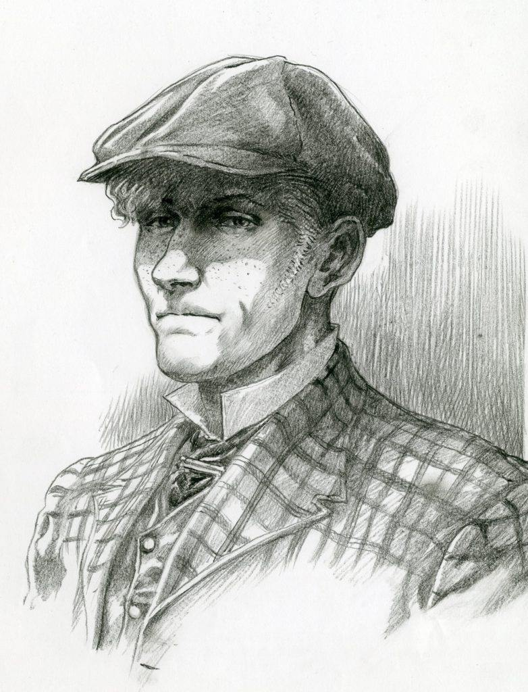Tout cela ne fait qu’accroître mon amour et mon admiration pour Sherlock… au point de rêver de lui quasi toutes les nuits jusqu’à la sortie du film tant attendu (qui sera une petite déception).
Si il faut trouver une raison à cette passion, sans doute faut-il se souvenir qu’à cette époque, j’étais un tout jeune adulte qui avait bien du mal à s’insérer dans son époque et à comprendre les interactions avec les jeunes de sa génération. Le monde qui m’entourait me laissait perplexe et vaguement effrayé, pour ne pas dire dans une totale et grande confusion. Or, ce monsieur Holmes était tout l’inverse : d’un seul regard, il semblait capable de donner sens à d’infimes signaux qu’il repérait sur ses interlocuteurs. Une espèce de décrypteur universel de la société et des êtres humains qui la composent, là, où moi, j’étais bien incapable de la moindre déduction pertinente. Vraiment un type admirable. Que j’enviais secrètement.
Confusément, je me disais qu’un jour, si j’en avais la possibilité et (enfin) le talent, j’aimerai bien écrire une histoire sur Sherlock Holmes… J’ai commencé tranquillement à y réfléchir, mais très vite, j’ai réalisé que la déduction selon Sherlock Holmes réclamait tant de finesse et une connaissance si pléthorique des codes (nombreux) de l’Angleterre Victorienne, que jamais je ne serai à la hauteur du sujet. Je m’étais finalement dit qu’une histoire de Watson serait sans doute beaucoup plus abordable pour moi… Un Watson privé de son ami et travaillant à essayer de se montrer digne de lui… ?... Là, encore, j’ai commencé tout doucement à y réfléchir…
Puis, j’ai cessé d’y penser (sans doute convaincu que ça restait trop éloigné de mes maigres compétences) et les années ont passé.
31 décembre 2000… soit 15 années plus tard. Cecil, le dessinateur du Réseau Bombyce, qui est devenu un ami très proche, est venu passer le réveillon avec nous à Strasbourg. Nous sommes dans la cuisine, en train d’émincer des poireaux, quand soudain, le bougre lâche une phrase qui va bouleverser nos vies à tous les deux : « Sherlock Holmes, ça te parle ? ».
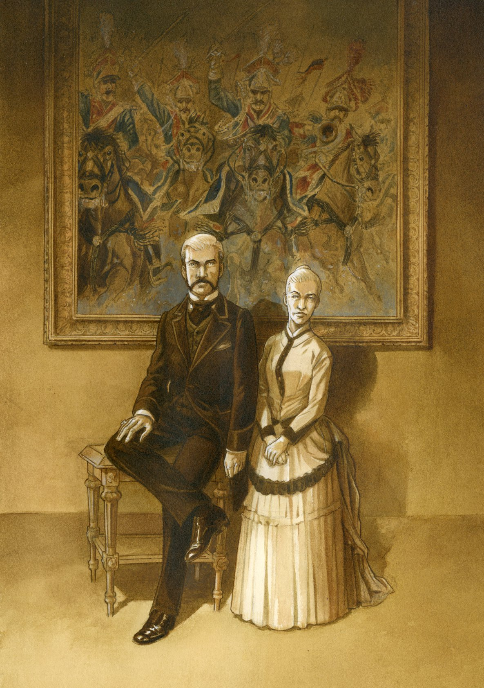Direct, je lui raconte tout ce que je viens de vous expliquer sur l’année de mes 18 ans et ma rencontre quasi charnelle avec le détective de Baker Street. Cecil m’avoue alors son envie de travailler sur le personnage. Je lui avoue mon désir d’écrire un jour sur le bonhomme, ainsi que ma crainte de ne pas être à la hauteur de notre héros. Je lui explique que j’avais pensé un temps écrire sur Watson… il me rétorque que Watson est un personnage horriblement maltraité par le cinéma, qui en a fait une sorte de Oliver Hardy, un petit gros rigolo qui a constamment l’air stupide face à la pertinence de son ami et colocataire. Watson est en fait un bel homme, athlétique et pertinent dans ses remarques, qui est juste décontenancé par un esprit véritablement supérieur et déroutant. Il y a des tas de choses intéressantes à dire sur Watson, qui n’ont jamais été dites.
De fil en aiguille, on décide de réhabiliter Watson et d’en faire le héros de notre histoire… mais que va-t-on raconter ? ça, c’est la grande question indispensable pour se lancer dans ce genre d’aventure ultra casse gueule ?
Me vient alors une idée. Une idée sans doute un poil ambitieuse. Et si, au lieu de raconter une histoire « à la Sherlock Holmes », on racontait « l’histoire même de Sherlock Holmes » ?, Car si, de Sherlock, on sait ce qu’il est : génial, impatient, drogué, bordélique, excentrique, intransigeant (avec les autres mais surtout avec lui-même), phallocrate, portant une épaisse armure pour garder à distance ses sentiments, déplaisant parfois… on ne sait pratiquement rien des raisons qui l’on amené à être tout cela ?
En fait, on ne sait quasiment rien de sa vie passée sur laquelle il ne s’exprime qu’à de très rares occasions : on sait juste qu’il a des parents vivants (qu’il ne présentera jamais à Watson), un frère (Mycroft) aussi génial que lui et qui occupe une haute fonction dans le gouvernement britannique et une lointaine parenté avec un peintre français (Horace Vernet) qui a travaillé sur une série de tableaux représentant des batailles napoléoniennes.
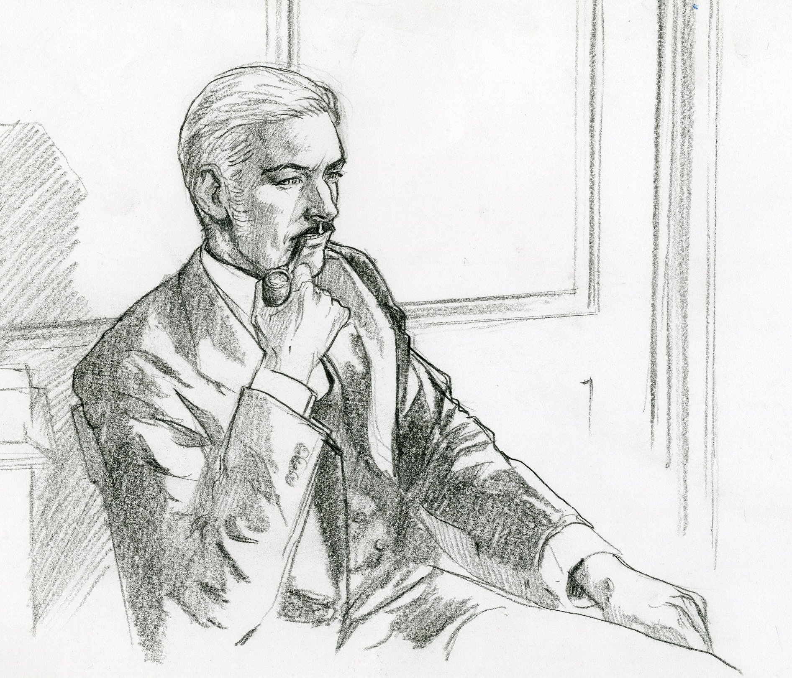Et du coup, si on essayait de raconter « ce qui a construit » la légende ?… de découvrir comment, un garçon issu de la bonne société britannique se toque de devenir un détective consultant, alors que son esprit, vif et pertinent, aurait dû lui permettre d’accéder aux mêmes fonctions prestigieuses que son frère aîné ? Qu’est ce qui a provoqué cette rupture et a conduit à ce besoin de contrarier les plans que sa famille avait dus établir pour lui ?
Et si on allait plus loin encore ? Et si au lieu de faire de l’Angleterre victorienne un vague décor en fond d’histoire, on essayait de voir comment la famille Holmes et Sherlock lui-même vivaient leur implication dans une société en pleine mutation politique et sociologique, alors que le capitalisme et le patriarcat étaient de plus en plus violemment contestés par de nouveaux courants de pensées ?
Et si on profitait de la mort de Sherlock Holmes aux Chutes de Reichenbach pour lancer un Watson accablé et dérouté en quête de toute cette compréhension nécessaire pour faire son deuil… ?
Et si, en fait, on faisait un truc qui bouleverserait durablement la vision qu’on peut avoir de Sherlock Holmes ?
MAKABI – LLOYD SINGER
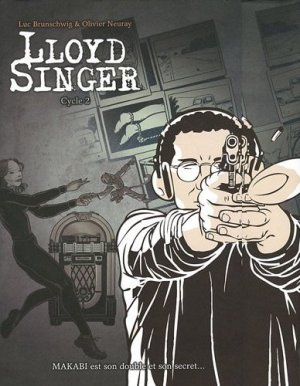
Nous sommes à la fin des années 90. Deux séries trustent inlassablement les premières places du top des ventes et ce depuis des années : XIII et Largo Winch.
Deux points communs : un même scénariste : Jean Van Hamme, mais surtout et c’est là que ça devient intéressant : un personnage récurrent dont les aventures peuvent se décliner à l’infini.
Je n’ai, jusque là, proposé à mes éditeurs, que des histoires complètes, bouclées en 4 ou 5 tomes (L’Esprit de Warren et le Pouvoir des Innocents). Je n’ai même jamais pensé écrire pour un personnage central (même si mon goût pour le comics me pousserait davantage vers ce genre de séries)… Et, du coup, secrètement, je me lance un défi : et si un éditeur venait me demander de créer un personnage récurrent, pas du tout dans l’esprit comics mais un vrai personnage à la franco-belge, pour la collection REPERAGES de Dupuis ou TROISIEME VAGUE du Lombard, qu’est ce que j’aimerai lui proposer ?
Un challenge idiot entre moi et moi, qui ne servira peut-être jamais mais qui s’avère amusant à méditer.
Comme aucun éditeur n’entre en lice sur ce sujet, je suis très très à l’aise pour aller explorer le tréfonds de mes envies. Et c’est ce que je fais.
Fondamentalement, j’aime les histoires à la XIII et Largo Winch. J’aime leur rythmique, la tension, le suspens, les retournements de situations, la part de réalité qu’elles englobent. Cependant, je ne suis pas un grand amoureux des personnages fait d’un bloc, à la mâchoire carrée, bourrés de fric, qui dégainent leurs flingues et tuent sans que cela ait la moindre interférence sur leur psychisme et qui traite les femmes comme des friandises, à croquer entre deux aventures.
En fait, j’aime les personnages plus quotidiens mais qui évoluent, qui peuvent penser être arrivés, confinés dans des habitudes, qui ignorent qu’ils ont encore beaucoup de choses à apprendre de la vie, mais un événement vient bouleverser leur existence et remet tout en question.
Or, j’ai depuis toujours, dans mon entourage un personnage fascinant, correspondant tout à fait à ça. Un garçon qui se comporte comme si il avait tout compris du monde depuis qu’il a 7/8 ans… il fait ça non pas parce qu’il se prend pour ce qu’il n’est pas, mais parce qu’il est ultra intelligent et fragile et que son attitude le protège d’avoir à aller se confronter émotionnellement aux gens et à la vraie vie.
C’est mon frère Yves.
Physiquement, il ressemble à Woody Allen dont il a l’humour, il travaille dans un cabinet d’expert comptable et gère pour son patron un staff de jeunes femmes avec lesquelles il s’entend on ne peut mieux et qui lui font une confiance totale. Tout ça parce que mon frérot est depuis toujours ultra compétent dans son travail et dans un rapport très sain avec les femmes qu’il a toujours abordées comme des égales et sans rajouter de séduction à deux balles (mon frère ne s’est jamais vu comme un être sexuel).
De là l’idée d’imaginer ce que donnerait des aventures à la Largo Winch, sans Largo mais avec mon frère en remplacement. Qu’est ce que ça changerait ?
Ben en fait, ça change à peu près tout.
Là où finalement, c’est le personnage de Largo qui est mis en avant alors qu’il vient en aide au monde et des jeunes femmes en détresse, une histoire avec mon frère mettrait davantage en avant la personne au secours de laquelle il se porte.
Là où Largo ou XIII prendrait la route pour rattraper ou fuir ses ennemis, mon frère viendrait plutôt se réfugier au sein de notre famille pour mettre la victime en sécurité.
Là où Largo ou XIII jouerait des muscles pour avoir l’air toujours plus héroïque, mon frère dissimulerait ses prouesses physiques sous un masque afin qu’on ignore tout de ses capacités à aider autrui…
De ses premières réflexions et de la vie réelle de mon frèrot naissent les premières idées : le personnage doit être assez classique dans ce qu’il semble être, mais très inattendu dans ce qu’il est vraiment.
Je le vois donc comme un agent du FBI (pour le côté classique), mais pas un agent de terrain. Plutôt un agent comptable en charge de la paye (ça correspond mieux à Yves et ça va radicalement prendre les gens par surprise). Son physique aura l’air plutôt inoffensif (on a essayé plusieurs pistes physiques, mais on est resté sur l’idée que seul mon frère pouvait jouer un personnage ressemblant à mon frère. Du coup, c’est bien lui qu’on retrouve dans le rôle principal) mais il sera capable de prouesses inattendues (mon Yves est tout sauf un athlète (à l’époque, il doit peser 60 kilos tout mouillé), donc le rêver en roi des arts martiaux me mettait en joie).
Il a grandi dans le quartier juif de Richmond au sein d’une communauté très soudée (un peu comme mon frère et moi dans la communauté juive de Belfort où nous avons été élevé), mais dans une famille en ruine (ses parents sont morts quelques mois avant ses 13 ans. Il avait le choix entre laisser la fratrie (ils sont 4 frères et sœurs) se disperser dans des familles d’accueil ou devenir le père de substitution avec l’aide de sa grand-mère, femme à poigne mais trop âgée pour les recueillir seule).
Au FBI, il dirige une équipe de jeunes femmes avec lesquelles il s’entend particulièrement bien. C’est d’ailleurs pour cette qualité qu’un ami d’enfance, agent de terrain pour le FBI, fait appel à lui, n’arrivant pas à installer la confiance nécessaire avec une jeune russe, maman d’une petite fille, qui vient d’échapper à un réseau de prostitution. Il espère que Lloyd (dont la famille est comme elle, d’origine russe) saura la rassurer, mais tout va tourner très vite au vinaigre.
Et voila, c’est parti.
Le personnage central s’appellera LLOYD SINGER (en double hommage à HAROLD LLOYD auquel mon frère emprunte le côté petit homme doux à lunettes et YVES SINGER, notre premier professeur de culture hébraïque au Talmud Torah de Belfort (l’équivalent du catéchisme pour les juifs).
Comme je veux que malgré son air inoffensif, il soit capable de se défendre face à l’adversité, je lui invente un double, un athlète spécialiste en arts martiaux qui apparaît quand la famille Singer a besoin d’être défendue. Pour le nom du personnage, je pense aux héros de la résistance juive contre l’envahisseur grec au 2e siècle avant Jésus Christ : Les macchabées ou maccabis (du nom de la famille qui a pris la tête des résistants)…
Je lui adjoins deux sœurs aussi différentes que possible et un frère, qu’il a élevé (Eliott n’avait que quelques mois quand leurs parents sont morts). Lloyd est à la fois le frère et le père de ces 3 personnes… au point, à 35 ans, d’être convaincu d’avoir vécu sa vie… de ne plus être attractif pour une relation à la fois sexuée et maritale… un vieil homme de 35 ans… que la série va réveiller… l’entraînant vers de nouveaux choix pour le futur et une meilleure compréhension de son passé.
LE SOURIRE DU CLOWN
Nous sommes à la mi-janvier 1990. Et pour la toute première fois je rencontre Laurent Hirn.
Oui, je sais, je vous ai déjà parlé de cet événement fondateur en évoquant le Pouvoir des Innocents et pourtant, c’est bel et bien ce même jour, alors que nous parlons de jungle vietnamienne, de décors new-yorkais et de politique humaniste, que Laurent me demande si Le Pouvoir est mon seul projet… ou si j’en ai d’autres ?

Je sens qu’il teste la bête qu’il a en face de lui… et qu’il veut voir ce que j’ai dans le ventre.
Je lui parle donc d’une idée qui me trotte dans la tête depuis un moment. Une espèce de fable se déroulant en France, une petite ville indéterminée au début du 20e siècle, un coin assez pauvre où un curé ressemblant à un ogre, un type rude, un peu cruel et pervers (je pense que j’avais une espèce de Raspoutine en tête), capable de comprendre la psychologie de ses paroissiens d’un seul regard, en décryptant leurs mimiques, leurs façons de bouger, règne sur sa paroisse d’une main de fer. Il est à la tête d’une sorte de dictature consentie par des gens trop désespérés pour s’imaginer qu’il puisse y avoir mieux pour eux que ce type à demi fou qui les domine de sa cruauté et de son dieu tout puissant.
Et puis, j’imagine en face de lui un jeune clown.
Pourquoi un clown ?… j’ai envie d’opposer à ce curé un personnage totalement indécryptable pour lui… un gamin qui a vécu un traumatisme tel qu’il est totalement muet et victime d’une paralysie faciale. Il ne s’exprime qu’en maquillant sur son visage les émotions qu’il ressent, ce qui le fait ressembler à un clown. Mais au quotidien, le visage du gamin n’exprime rien du tout.
C’est une page blanche que le curé n’arrive pas à déchiffrer ce qui le rend nerveux et inquiet. D’autant que le gamin est entré en résistance contre lui, car le traumatisme qui lui a paralysé le visage… c’est au curé qu’il le doit.
Laurent aime beaucoup l’idée. Il trouve intéressante cette étrange opposition du mal et du bien, un peu plus outrée que dans le Pouvoir des Innocents, mais avec deux figures fortes comme dans les contes. Il me dit que si personne ne travaille sur cette histoire à la fin du Pouvoir, il serait heureux d’en être le dessinateur.
Je n’en reviens pas. Deux projets placés en une seule journée… et le début d’une fantastique aventure qui va bouleverser ma vie de fonds en combles.
10 ans se passent… nous sommes à deux doigts de terminer le Pouvoir. On parle de l’avenir et Laurent me confirme qu’il se souvient très bien de mon histoire de clown et qu’il est toujours partant pour la réaliser.
Je me re-repenche sur le récit. Avec un regard neuf.
10 ans viennent de s’écouler et je ne suis plus tout à fait le même homme. Il s’est passé énormément de choses durant ces 10 années. Je me suis découvert une passion pour les récits à forte connotation sociale, bien ancré dans une certaine réalité. Du coup, mon récit de clown prenant place dans une ville qui n’existe pas, au début du 20e siècle me parait complètement hors cadre… d’autant que pour une fois, je souhaite situer mon histoire en France, mais que pour le coup, je ne parle pas vraiment de la France et encore moins de ses réalités.
Tout ça me parait d’autant plus hors sol, que si j’ai pendant des décennies été plus intéressé par l’Amérique et ses mythologies, je connais de mieux en mieux mon pays et ses réalités (parfois parmi les plus inavouables). La femme qui partage ma vie est assistante sociale, travaille quotidiennement dans les quartiers les plus isolés et les plus chauds de Strasbourg. Elle me raconte chaque jour tout ce qu’elle voit… mais surtout, en 1994, le festival d’Audincourt m’a proposé de travailler sur un livre mémoire, une évocation des banlieues Peugeot, ces grands ensembles modernes, placés en dehors des villes, qui devaient accueillir la main d’œuvre travaillant pour le constructeur automobile dans les années 60.
On m’offre de rencontrer des familles qui vivent là depuis le début de ces banlieues… j’en côtoie une dizaine et je découvre leurs parcours, leurs anecdotes, mais surtout l’histoire structurelle de ces cités qui aujourd’hui font peur mais qui dans un premier temps ont été un formidable terreau de progrès social (des gens y découvraient tout le confort moderne (l’eau chaude, de grands volumes, une pièce par habitant…) et d’intégration (les habitants français apprennent la langue aux habitants venus de Yougoslavie, du Portugal, d’Algérie…)
Je repense à mon idée de départ, d’installer mon récit dans un lieu de France en grande détresse… et je me dis qu’une de ces banlieues serait parfaite. Le Sourire du Clown naît donc de la fusion entre mon idée première d’opposition entre un curé dictatorial et un clown muet et inexpressif et de ce besoin viscéral d’inscrire mes récits dans un terreau social sinon crédible du moins qui amène du sens et de la réflexion.
Je repense tout dans cette optique-là. A cette époque, on parle beaucoup de la montée de l’Islamisme dans ces cités. Du coup, je me dis qu’il serait intéressant d’inverser la proposition. De montrer que la religion n’est qu’un prétexte pour assurer une domination sur une population et la manipuler. Que le christianisme peut très avantageusement remplacer l’Islam dans cette optique.
Je me dis aussi que le drame qui a fracturé la vie du jeune garçon muet pourrait venir s’écrire en lien direct avec l’histoire de ma banlieue… mais surtout, que l’idée du clown doit être prise de façon littérale.
De là, me vient l’idée de ce duo de clowns ambulants Grocko et Clock, deux types un peu minables mais qui croient à 2000% à leur minuscule mission d’apporter un peu de bon humeur dans un endroit d’où le rire semble banni et qui viennent déstabiliser (même modestement) le pouvoir du Curé, provoquant sa colère et des réactions irrationnelles, qui provoqueront toute la dynamique du récit.
Cette histoire oscille entre un réalisme presque cru et un léger décalage dans la façon d’aborder ces banlieues, quelque chose de poétique et d’étrangement intemporel qui fait un peu penser aux films de Marcel Carné et Jacques Prévert.
Ca a pas mal déstabilisé les lecteurs, qui n’ont pas forcément tous compris pourquoi ce curé au milieu d’une banlieue et pas un Imam ? Pourquoi un clown plutôt que des jeunes délinquants ?
URBAN
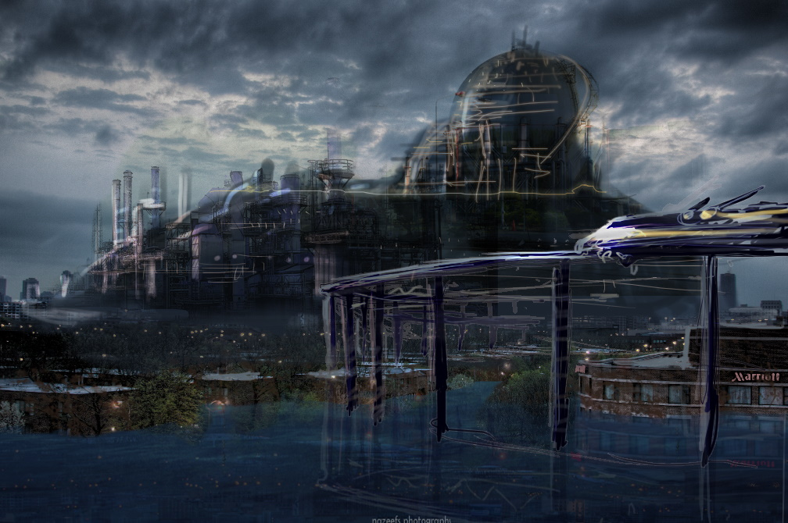
Nous sommes en 1982. J’ai 15 ans… je suis un élève plutôt dans le haut du classement, mais je ne trouve rien dans l’école qui me motive réellement… En fait, la seule chose qui illumine mes journées c’est la bande dessinée et surtout les comics… les histoires de ces personnages incroyables me touchent bien davantage que tout ce qui se passe autour de moi (si on oublie la fille inatteignable dont je tombe systématiquement amoureux et qui me dit tout aussi systématiquement que je suis un « ami » formidable).
Depuis 4 ans déjà (depuis mes onze ans, donc), je sais que je veux en faire mon métier sauf que… je n’ai pas vraiment de projet… aucune idée forte et un peu personnel qui pourrait faire le bon sujet pour m’affirmer dans ce milieu.
Je suis aussi un ado de son temps (enfin dans certains aspects, moins dans d’autres)… en 1982, on écoute du Hard Rock, on écoute ACDC et je fais comme tout le monde… J’achète Hells Bells, je m’en imprègne, puis je remonte leur discographie et je tombe sur un morceau de Bon Scott qui me fascine littéralement : SIN CITY… j’en aime la musique, la voix étrange mi aigue, mi rocailleuse du chanteur, un peu moins les paroles qu’un Anglais maladroit m’interdit de comprendre vraiment. Surtout j’en aime le titre : SIN CITY… la cité du vice… voila qui a de quoi ouvrir la porte à tous les fantasmes de l’ado que je suis alors.
C’est aussi l’époque où on se passe à la récré les numéros de Métal Hurlant et de Pilote… C’est un choc, presqu’autant que les comics l’ont été… découvrir Bilal, Corben, Moebius, l’Incal, The Long Tomorrow… c’est découvrir une BD plus adulte, plus charnelle… des femmes, des robots, des vaisseaux, le futur… et puis, c’est aussi l’année de Blade Runner.
Dans ma tête le titre SIN CITY se pare d’images dignes de Métal… une ville futuriste déliquescente ressemblant à un Las Vegas gigantesque… un homme, un détective privé, allongé sur un lit dans sa chambre étrangement ancienne et attendant son heure, des ordures dans des rues sales, sur lesquelles courent de rats faméliques, avant que brusquement, le tas d’ordure disparaisse, désintégré, des robots qui sortent du sol dans une ferme comme des monstres Lovecrafetiens mais mécaniques… peu ou prou, on retrouvera les images qui m’obsédaient à cette époque lointaine dans la version final d’URBAN, quelques 30 années plus tard.
Ce que vous ignorez par contre, c’est que j’ai personnellement dessinée au moins deux versions de la planche 1 de ce qui s’appelait encore SIN CITY… avant de me dire que mes maigres compétences de scénariste et de dessinateur n’étaient franchement et de très loin pas à la hauteur de ce pharaonique projet (retenez bien cette idée, elle reviendra très régulièrement tout au long de cette longue saga).
Du coup, et sans regret, je remise l’idée en espérant pouvoir la reprendre un jour parce qu’elle me botte (même si je ne sais pas encore trop bien quoi en faire).
6 ans se passent. Nous voilà en 1991. Je viens de démarrer mon tout premier projet - Le Pouvoir des Innocents - aux Editions Delcourt. On me demande si j’ai d’autres idées en tête ? La seule qui a un peu d’ambition est ce Sin City qui revient me hanter régulièrement. Je me glisse donc derrière ma machine à écrire et je leur écris un synopsis complet du premier volume.
J’envoie tout ça à Guy Delcourt. Bien sûr, en voyant le titre, il s’esclaffe (on ne saurait lui en vouloir). A cette époque, je suis censé être l’un des plus gros fans de Frank Miller vivant sur le territoire français (voir son plus grand fan existant sur Terre).
Jamais drôle de passer pour une bille, mais ne lisant pas l’anglais et ne fréquentant pas les revendeurs français de comics, j’ignorais que mon idole était en train de publier aux States ce qui allait devenir un de ses chefs d’œuvre.
Les rires retombés, Guy Delcourt s’attelle à la lecture du projet. Je précise que Guy affichait à l’époque une certaine condescendance à mon égard (j’étais jeune, je souriais beaucoup, ce qui me donnait sans doute l’air d’un gentil ahuri), convaincu sans doute que les qualités qui l’avaient enthousiasmé sur Le Pouvoir des Innocents étaient dues en grande partie à la participation de Laurent Hirn à l’écriture du scénario. Sauf que… sauf que… il retrouve dans le Sin City de Brunschwig (hahaha) le talent qu’il avait vu dans Le Pouvoir. Bigre !… Je suis donc bien un vrai scénariste. Du jour au lendemain, le ton change et on m’accorde soudain des attentions qu’on ne m’avait jamais manifestées jusque-là.
Sin City devait donc être le scénario de ma consécration… Oui, il aurait dû, mais j’imagine que ça aurait été trop simple comme ça. Et Dieu sait que « simple », ça ne l’a pas été !
Écrite pour Ciro Tota (qui ne pourra la réaliser, parce qu’il est pris à plein temps sur Aquablue), l’histoire va connaître un sort aussi malheureux que désespérant.
En fait, l’histoire (rebaptisée dans l’intervalle Urban Games) est aussi complexe que je l’avais subodorée lorsque j’avais 15 ans. Il y a dans cette histoire de l’émotion et de la psychologie, de la relation humaine et sociétale (comme dans toutes mes autres histoires), mais aussi de l’architectural grandiose (le fameux Las Vegas futuriste puissance mille que je finirais par baptiser Monplaisir) et aussi, tout un tas de robots de formes et de tailles très différentes.
Quelqu’un m’a dit un jour qu’il n’y avait que Moebius pour arriver à créer et exprimer toutes ces choses. Un autre m’a dit que David Lloyd serait parfait pour donner l’aspect faussement festif de cette cité (ce sont les coulisses dudit Las Vegas qui forme le sujet et l’intérêt de ce Urban Games)… En tout cas, il aurait fallu quelqu’un de cette trempe-là…
Or, je n’avais que 24 ans et on ne marie pas un jeune scénariste de 24 ans avec un vieux briscard revenu de tout (enfin, on pourrait, mais on ne le fait pas)… On l’acoquine avec des gens de son âge pour le meilleur et dans ce cas-là, pour de furieux et délétères désastres artistiques et humains.
Quand je dis « délétère », c’est que Urban a brisé, sinon des vies, du moins des carrières. Un des premiers à avoir tenté sa chance est un jeune dessinateur repéré par Delcourt lors d’un concours organisé par le festival de Sierre, Guy nous met en rapport sans tarder.
On se voit souvent (la chance veut qu’il habite près de chez moi)… On cause beaucoup et on semble bien se comprendre sur les enjeux et la manière de le retraduire graphiquement. Puis il attaque les planches et très vite, quelques erreurs de narration apparaissent.
J’essaie de l’aider à corriger ses fautes, mais curieusement, mes conseils semblent totalement le déstabiliser, à tel point qu’il finit par perdre toute confiance en lui et toute notion de son métier.
Au bout de quelques semaines, il n’est plus capable de réaliser une planche qui se tient.
Je finis par lui avouer que je ne vois pas où tout cela nous mène et je demande à Laurent Hirn (maitre es-narration) si il accepterait d’encadrer le garçon pour lui redonner un peu d’élan ? Il accepte, mais rien n’y fait. Les conseils de Laurent comme les miens semblent complètement dérouter notre dessinateur. Guy Delcourt propose à son tour de l’encadrer mais les résultats sont de pires en pires, sans que personne n’arrive à comprendre pourquoi. On finit par se séparer, sans doute pas bons amis, mais en bon terme.
Ce que j’ai oublié de vous dire, c’est qu’il était en dernière année aux Arts Déco de Strasbourg quand tout cela s’est produit. Arrive le moment pour lui de passer son diplôme. Il parle au jury de ses expériences professionnelles à commencer par ce monde de la BD qui vient de le rejeter. Il en parle de façon si amère et négative, que le jury s’en émeut et le juge incapable de naviguer dans un univers pro. Ils lui refuseront son diplôme.
Sans projet, sans diplôme, ce dessinateur n’est jamais réapparu dans le petit monde de la BD… première victime du projet maudit de Luc Brunschwig.
Il y en aura bien d’autres, malheureusement…
Avant de poursuivre l’histoire (tragique) d’Urban, il faut que je vous parle quelques instants de Sébastien Gnaedig, l’homme qui préside aujourd’hui à la destinée éditoriale de Futuropolis (vous verrez, ce n’est pas sans lien avec notre sujet, tout au contraire).
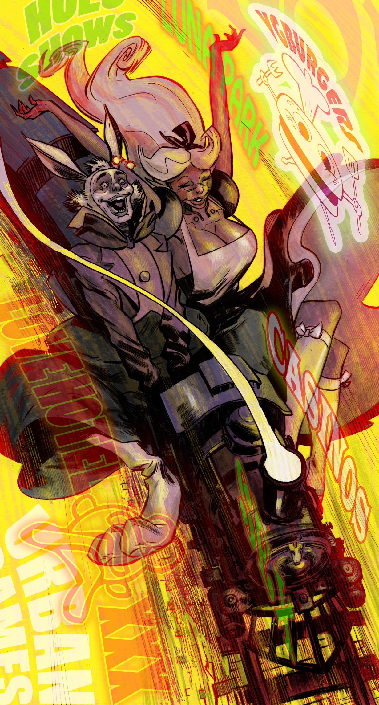Je connais Seb depuis 1992, année de son arrivée aux Editions Delcourt au poste de chef de fabrication. Le chef de fab est, vous le savez, l’homme en charge de l’impression de nos bouquins. Seb était à l’époque ce qu’il est aujourd’hui encore (Dieu merci !) : une sorte de Zébulon virevoltant et chaleureux fourmillant d’idées, le sourire aux lèvres et l’œil qui frise.
Il devint très vite une des personnalités les plus attachantes des éditions Delcourt, le type vers qui l’on se dirige naturellement dès qu’on met les pieds chez notre éditeur.
En plus de l’énorme sympathie qu’il inspirait, on percevait chez lui un intérêt vif et singulier pour nos albums, ce que ces derniers racontent et la façon dont ils le racontent.
Seb lisait tous les albums qu’il imprimait. Non seulement, il les lisait, mais il nous en parlait, avec pertinence, passion. Je vais en décevoir quelques-uns, mais c’est une chose rare, même dans une maison d’édition. Pour lui, les livres étaient à l’évidence autre chose qu’un produit qui doit se vendre ou un simple objet de distraction. C’étaient des univers, des personnages et personne ne semblait mieux comprendre que lui nos intentions, cette énergie qui nous fait avancer et créer ces mondes imaginaires.
Il les lisait, oui. Mais en 1996, coup de tonnerre. On découvre par la bande que Sébastien va quitter Delcourt pour les Humanoïdes Associés. Choix qui peut sembler surprenant, mais en nous renseignant, nous finissons par découvrir que les Humanos lui offre, non pas un poste de chef de fabrication, mais un poste de directeur littéraire, évolution que Delcourt ne pouvait lui proposer.
En juin, Seb s’en va et nous laisse orphelins. Pire, il nous quitte sans un mot, nous laissant dans la confusion la plus totale.
Et puis, en août de la même année, je reçois un coup de fil de mon ami… joie ! Joie d’autant plus grande qu’il me parle de ses nouvelles fonctions, des pistes qu’il souhaite explorer et de sa volonté de travailler avec moi (envie plus que partagée, vous vous en doutez, même si à l’époque planait un tout petit doute : Seb était un brillant chef de fab qui a fait la réputation des éditions Delcourt. Il parlait aussi très bien de nos albums, mais tout cela suffisait-il pour faire de lui un bon directeur de collection ??? Bon, je lève tout de suite le suspens, vous savez tous où le bonhomme en est aujourd’hui)
Le premier projet que je lui propose, c’est Urban Games (ça y est, on y arrive). Ça fait 5 ans que Delcourt l’a entre les mains, qu’il n’arrive à rien, je commence à me dire qu’il est plus que temps d’explorer de nouvelles pistes. Et puis, Urban, c’est un récit de SF et les Humanos, ben, c’est ce qu’on faisait de mieux dans le genre à l'époque.
Seb, qui n’avait jamais eu vent du projet chez Delcourt, le lit et s’enthousiasme aussitôt. Surtout, ce qui est excitant avec lui, c’est qu’il se met à parler du projet avec une compréhension parfaite de l’univers, des personnages et des intentions et un regard très pertinent sur la façon dont tout cela est mis en œuvre.
Et puis, on se met à parler de la façon dont on va réussir à donner vie à ce fichu projet qui semble irréalisable pour tous ceux qui l’ont eu entre les mains (à l’époque, plus d’une dizaine de dessinateurs ont tenté des essais, sans se montrer convaincants).
Puisqu’il semble difficile, voir impossible pour une seule personne de relever tous les défis imposés par Urban Games et son mélange d’humanité et de Las Vegas futuriste, pourquoi ne pas lever une équipe pour que chacun de ses membres assume l’une des difficultés ???
C’est l’époque où le manga commence à s’implanter en France, où Jean-David Morvan et ses potes développent chez Glénat des histoires sur des formats inédits de 150 pages en bossant en équipe (un dessinateur, un story-boarder et un designer).
Je propose à Seb de faire de même, en adaptant Urban Games a un récit plus dilué et en profitant de cette dilution pour mieux développer la richesse de l’univers graphique de la série.
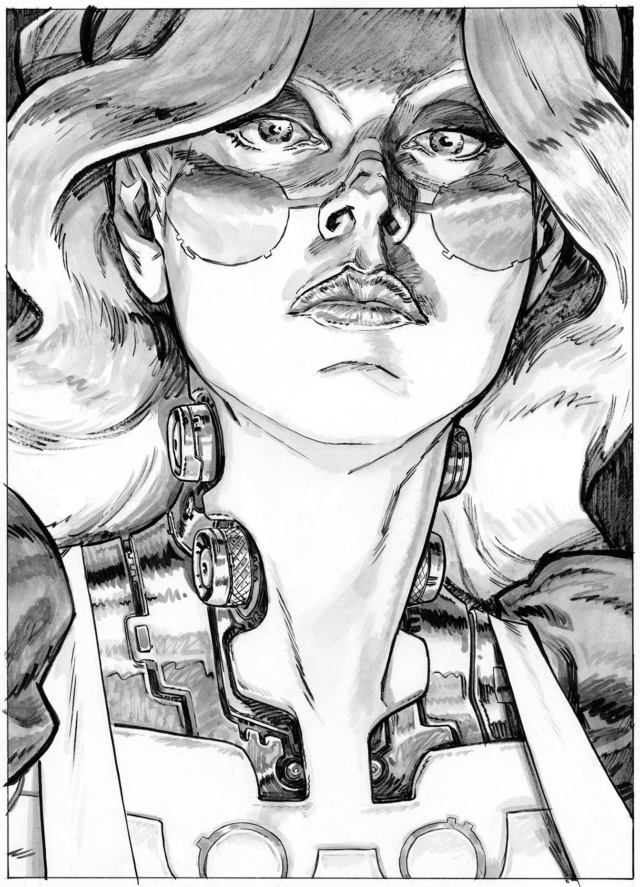À cette époque, je travaille avec Laurent Hirn sur Le Pouvoir des Innocents dont les talents de metteur en scène font l’admiration de tous. Je lui demande de devenir notre story-boarder. Hirn a été l’un des premiers lecteurs du projet. Il le connaît depuis longtemps et a envie de m’aider à le mener à bien. Il dit « oui ».
Idem pour Laurent Cagniat. À l’époque, nous travaillons ensemble sur Vauriens et le sujet d’Urban le séduit beaucoup même si il n’a pas le temps d’en être le dessinateur principal. Par contre, Cagniat adore imaginer de petits objets, des décors… Il sera notre designer.
À l’époque toujours, je me suis installé en atelier avec deux amis sur Strasbourg. Parmi eux, un certain Jean-Christophe Raufflet qui a un grand talent de cartooniste qui semble tout à fait approprié pour l’univers déjanté et élastique d’Urban Games. Je lui fais ma demande. Il écarquille de grands yeux, sourit comme un gamin à qui l’on vient d’offrir un gros Meccano à Noël. Il dit oui, avec enthousiasme…
Ce qui n’a fait ni son bonheur, ni le nôtre…
En mars 1997, nous signons enfin Urban Games (ça fait déjà 6 ans que j’en ai écrit le scénario) convaincu d’être enfin engagé sur les bons rails avec une « dream team » aux commandes que plus rien ne pourra arrêter. Nous signons dans un format manga, soit 150 pages, avec un petit prix de planche, cohérent cependant avec notre objectif de faire au minimum une page par jour (objectif qui semble facile à atteindre avec un storyboarder, un designer et un dessinateur combinant leur énergie)… sans nous rendre compte que nous courons à la catastrophe.
1ère erreur – alors que nous demandons un petit format d’album dans l’esprit du manga, Sébastien Gnaedig, notre directeur de collection, nous propose au contraire un grand format. Son argument : puisque 3 dessinateurs bossent sur la série, que les designs promettent des décors monumentaux et chatoyants, autant que les lecteurs aient un format qui leur permette d’en apprécier la somptuosité.
L’argument semble valable et nous le suivons avec enthousiasme sur ce terrain. Ce que ni Sébastien ni nous n’avons prévu, c’est que mon découpage façon manga (au maximum 4 ou 5 cases par pages) sur un grand format allait donner lieu à des cases bien plus grandes que dans une BD classique (où le nombre de cases varie entre 6 et 9 en moyenne)… des cases géantes que Jean-Christophe Raufflet, le dessinateur (dont c’était le premier album et qui voulait à tout prix faire bonne impression) allait s’empresser de remplir de mille et un détails (débordant en cela sur le travail de Laurent Cagniat, le designer)… des détails justifiés par les riches décors de la cité post-Las-Vegas, mais chronophages bien au-delà du raisonnable.
Du coup, d’une journée de travail pour chaque planche, on est passé à une semaine voir plus pour un prix qui ne prenait pas du tout en compte cette donne. Très vite, la situation financière de Jean-Christophe est devenue intenable.
Plusieurs fois, il a tenté de renégocier son prix de planche pour se donner de l’oxygène. Sébastien l’a écouté, compris, a cédé une première fois, mais quelque soit le prix offert, il n’était jamais à la hauteur du temps que Jean-Christophe investissait (à tort ou à raison ?) dans ses pages.
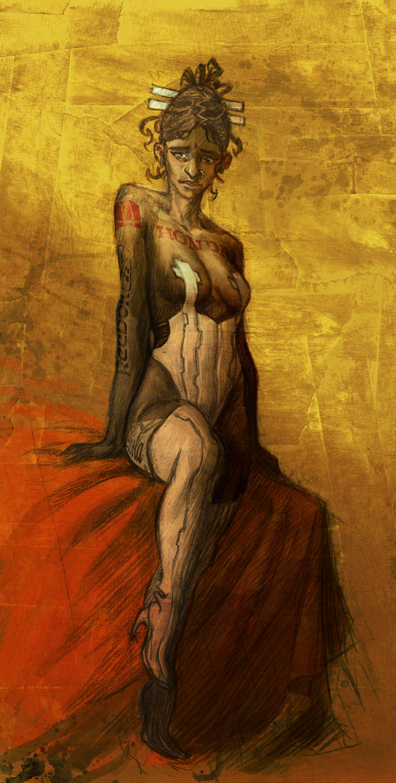Rapidement, un sentiment d’être sous-payé, de ne pas être soutenu et compris, s’est emparé de lui. Travailler sur Urban Games est devenu une souffrance à tous niveaux. Avec en plus l’obligation d’accepter de menus travaux annexes pour faire entrer un peu de sous. Le projet s’est mis à patiner furieusement. Il devait être réalisé en un an à une cadence stakhanoviste. Deux ans plus tard, on en est à peine au quart des 150 pages prévues. On cherche une solution pour sortir de la crise. On choisit de couper l’album en deux pour en rendre la pagination moins oppressante pour Jean-Christophe. Arrivé à la fin du tome 1, au bout de 3 années de crises, de doutes et de difficultés financières permanentes, Jean-Christophe décide de jeter l’éponge et de quitter le monde de la bande dessinée en jurant de ne plus y remettre les pieds.
2ème erreur – L’idée de diluer la narration en une narration manga. Enfin quand je dis « manga »… je devrais dire pseudo-manga, car je n’en lisais que très peu à l’époque et je n’avais qu’une idée très imprécise de ses codes et de l’intérêt que cette narration particulière pourrait m’offrir.
Et puis, soyons honnêtes, mon écriture habituelle, c’est tout sauf du manga. C’est plutôt du concentré que de la dilution.
Du coup, l’écriture de ce premier tome d’Urban Games n’était pas très juste. Elle était même carrément hésitante, imparfaite et en a étonné (désagréablement) plus d’un qui se retrouvaient à avoir moins à manger sur 80 pages que dans un de mes 54 pages habituelles.
Et puis, ce passage en cours de réalisation de 150 pages à 80 a fait que la dilution de l’histoire était encore plus apparente, puisque le rythme que nous avions adopté était celui d’un gros volume. Or, de ce gros volume, on ne présentait finalement que la moitié des pages réalisées, soit juste la moitié d’un début d’histoire sur 80 pages.
3ème erreur – comme il s’agissait d’une histoire d’anticipation, j’ai jugé (à tort) qu’il était nécessaire d’utiliser ce premier album pour planter le décor et le système de relation sociale à l’intérieur de la cité, avant de passer à l’aventure humaine… la mise en place est, de fait, trop longue et pendant trop longtemps, les personnages restent des silhouettes qui s’agitent un peu vainement et dans tous les sens. On ne se pose d’ailleurs sur aucun d’eux en particulier. On saute allègrement de l’un à l’autre, autant de mauvaises idées que je déconseillerais aujourd’hui vivement à un scénariste débutant.
Enfin bon, il doit y avoir encore deux, trois erreurs monumentales que je pourrais développer, mais vous avez déjà compris que le résultat de ce premier tome était tout sauf à la hauteur de ce qu’on en espérait. Sans Jean-Christophe pour continuer l’aventure, bourrelé de doutes sur les qualités (ou plutôt leur absence) de mon écriture, incapable de trouver un repreneur pour le dessin (même si Laurent Hirn et Laurent Cagniat se sont, un temps, offerts de reprendre le dessin), le projet est mort avec ce tome 1.
Que d’énergie, de talent et de temps investis en vain.
Les choses auraient pu en rester là… Mais Urban semblait ne pas vouloir mourir comme ça…
Les choses auraient pu en rester là… Mais, non, on ne se trimballe pas un sujet d’histoire pendant 30 ans, sans que ça revienne vous titiller l’âme, comme une histoire d’amour qui refuserait de mourir.
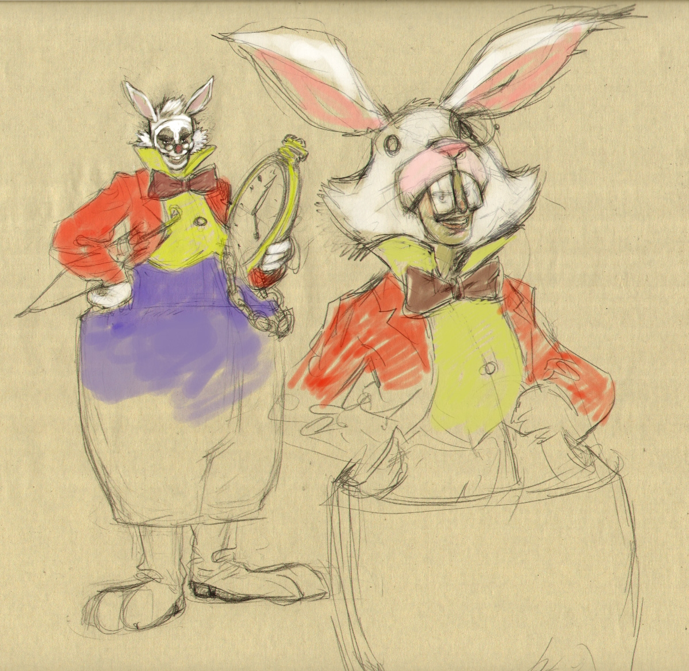Soyons honnêtes : toutes les erreurs commises sur le tome 1 d’Urban Games (sorti en octobre 1999 aux Humanoïdes Associés), je ne les ai pas comprises à la seconde où tout s’est effondré. Il a fallu plusieurs mois, voire plusieurs années de digestion pour comprendre qu’il n’y avait pas de malédiction dans ce qui s’était passé, mais plusieurs erreurs humaines tout à fait corrigeables.
Mais bon, j’avais perdu dans l’aventure de ce premier tome Jean-Christophe Raufflet, le dessinateur, qui était à l’époque l’un de mes meilleurs amis. Il me semblait que rien ne pouvait justifier une telle perte, surtout pas un récit fictif aussi brillant soit-il (et encore, j’étais très loin d’être convaincu de mon talent dans cette affaire)…
Longtemps, j’ai traîné mon amertume. Un jour, j’ai même décidé de retrouver tous les documents en relation avec Urban Games et de les détruire pour ne plus jamais avoir à être confronté à ce projet stupide. Mais avant d’en finir, j’ai voulu relire l’histoire une dernière fois… Et, comme un andouille, je me suis laissé captiver par mon propre récit.
J’ai enfin réalisé que c’était moi qui m’étais trompé dans ma façon d’aborder le sujet, que le fond de l’intrigue, les personnages, les thèmes développés, tout cela méritait qu’on s’y arrête (c’était d’autant plus criant qu’en général, il n’y a rien de plus obsolètes que les idées d’Anticipation… Or là, près de 20 ans après avoir été conçues, ces idées restaient sinon d’actualité, du moins tout à fait pertinentes, même si elles demandaient quelques aménagements).
C’était en 2003 et j’ai imaginé Urban tel que j’aimerais le lire à ce moment-là, avec mon expérience de scénariste un peu plus chevronné. Et ce que j’ai imaginé m’a plu. Plu au point de l’écrire. Et de le re-proposer à Sébastien, qui était devenu directeur de collection chez Dupuis (surtout afin de voir ce qu’il en penserait… Avais-je véritablement amélioré l’approche de cette histoire ?).
Sébastien s’est montré enthousiaste une fois encore. D’une approche un peu vide, on était passé à quelque chose de beaucoup plus intime, en abordant le récit du point de vue d’un seul personnage, celui de Zach, le jeune fils de fermiers qui depuis son enfance veut devenir flic et qui rejoint la seule ville encore présente sur Terre pour incorporer leur académie de police.
L’apparente bonhomie de la cité s’effaçait pour une noirceur plus marquée, le regard sur notre monde en 2050 gagnait enfin en profondeur ce qu’il perdait en mouvements confus et désordonnés…
Malheureusement, deux nouveaux problèmes venaient s’opposer à la remise en œuvre d’Urban : les droits de la série étaient entre les mains des Humanoïdes Associés et la maison connaissait des difficultés de paiement chroniques vis-à-vis de ses auteurs. Travailler avec eux aurait été une galère que je ne voulais imposer à aucun dessinateur.
Et puisqu’on parle du dessinateur, avec qui aborder ce nouveau défi ? Les difficultés graphiques qui se posaient depuis le début n’avaient pas changé, tout au contraire…
J’ai tenté quelques approches : Serge Pellé (dont certaines recherches pour Urban lui ont permis de mettre en place l’univers d’Orbital qu’il signe aujourd’hui avec Sylvain Runberg chez Dupuis), David Nouhaud (dont je scénarise la série Car l'Enfer est Ici), Daniel Acuna (brillant dessinateur espagnol travaillant pour DC et Marvel) et Niko Henrichon (l’excellent dessinateur chez DC de Pride of Bagdad)…
Leur talent se heurtait à certaines difficultés du projet ou plus prosaïquement à des problèmes d’emploi du temps ou tout simplement au fait qu’on ne trouvait pas de solution pour faire sortir les droits de chez les Humanos.
Et puis Roberto Ricci m’a envoyé un message en novembre 2008 pour me demander si je n’avais rien à lui proposer ; au moment où Robert Laffont était sur le point de fermer son pôle bande dessinée, où il réalisait Moksha, sa seule série en cours.
Je me dois, une fois encore, d’être honnête. Je connaissais bien le travail de Roberto et une seule chose me laissait penser qu’Urban pouvait être un projet pour lui : sa façon organique et très sombre de dessiner les villes… Pour le reste, je nourrissais pas mal d’incertitude sur sa façon de représenter les personnages, qui me paraissait parfois trop inconstante, mais bon…
Urban était le seul projet que j’avais sous la main qui aurait pu lui correspondre. Au pire, il allait dire « non » alors pourquoi ne pas tenter une fois encore ma chance ?
On n’est jamais à l’abri d’une heureuse surprise, même si honnêtement, ça faisait belle lurette que je n’attendais plus d’heureuse surprise du côté d’Urban…
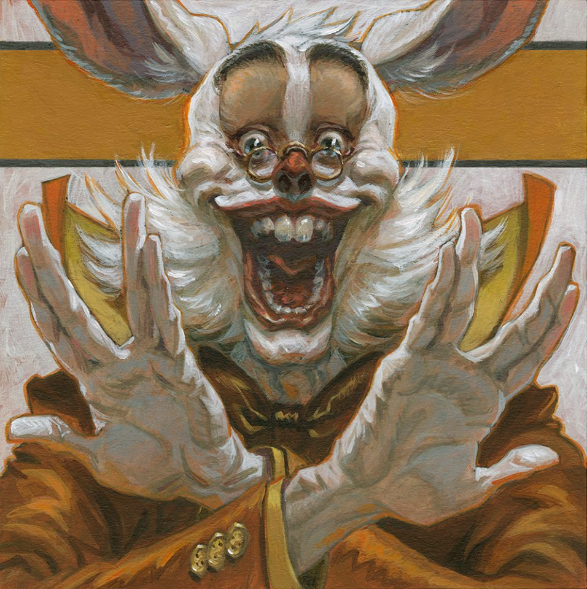Roberto a lu le projet dans l’heure qui a suivi. Il m’a tout de suite dit « oui »… Il était d’autant plus surpris de dire « oui » qu’après les Âmes d’Hélios qu’il avait réalisé quelques années plus tôt chez Delcourt, il s’était juré de ne plus refaire un projet de SF… Mais pour Roberto, ce n’était pas un projet de SF comme les autres, ce qui déjà me rassurait sur la pertinence de relancer Urban… Pour lui, c’était du Brunschwig en SF, mais c’était avant tout du Brunschwig !!!
Restait encore l’essentiel : voir ce qu’il allait faire graphiquement de ces personnages et de cet univers.
Le premier personnage auquel il a voulu s’attaquer était le personnage principal, Zach. Qu’en gros, je lui définissais psychologiquement comme une espèce de grand enfant naïf, élevé loin du monde, épris de justice, mais d’une idée de justice simplissime, issue de sa vision d’un dessin animé intitulé Overtime, dont le héros remontait le temps pour punir les criminels qui n’avaient pas été condamnés de leur vivant. Physiquement, je le voyais comme un garçon de ferme irlandais, grand, un corps puissant et une espèce de candeur dans le regard… Zach était défini ainsi depuis le début. Mais personne n’avait jamais vraiment su m’en montrer un vraiment convaincant. Même celui de Jean-Christophe, dans la première version éditée, semblait trop sûr de lui, trop baroudeur, pour vraiment bien jouer ce rôle.
Roberto m’a prévenu qu’il allait tenter quelque chose d’un peu hors des codes réalistes, quelque chose de culotté… Je ne savais pas à quoi m’attendre, mais je ne m’attendais vraiment pas à être aussi « bluffé » en ouvrant le mail qu’il m’a envoyé.
Zach était là, enfin… Vous comprendrez aisément pourquoi en découvrant la première planche de l’album. Roberto a su lui donner avec une parfaite justesse, le côté profondément terrien, paysan et candide que personne n’avait su lui donner jusque-là.
Les jours suivants, nous avons continué d’arpenter ensemble les rues de Monplaisir, définissant chacun des personnages principaux, à commencer par la ville elle-même. Chaque recherche venait confirmer l’enthousiasmante accaparation que Roberto avait réussi à faire avec cet univers.
Entre ses mains, tous les éléments qui avaient posé tant de problème durant toutes ces années devenaient pure évidence. Un monde riche, réaliste et cohérent était en train de naître sous mes yeux. Vous allez trouver ça idiot ou un peu prétentieux, mais durant toutes ces années à chercher le bon dessinateur, je n’ai jamais vraiment senti quiconque à la hauteur du sujet… Avec Roberto, c’est moi, qui aujourd’hui et depuis 10 ans aie peur de ne pas assez bien servir ce faramineux talent dont il fait bénéficier Urban.
LA MEMOIRE DANS LES POCHES
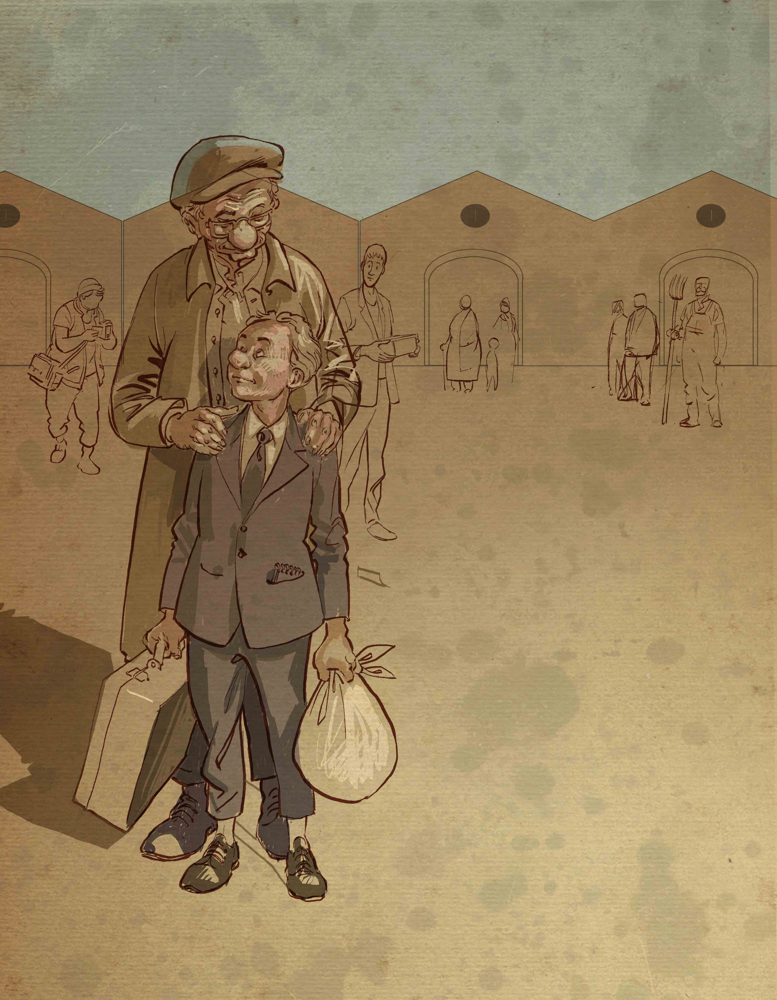Nous sommes en 1994. J’ai 27 ans, 2 ans de carrière et un ami illustrateur de livres pour enfants qui veut se lancer dans la bande dessinée. Il me demande si je peux lui écrire un scénario mais avant même que je lui réponde, il émet une condition : il veut une comédie. Et rien d’autre.
Pour ceux qui connaissent mon travail, on ne peut pas dire que les rires y fusent à 1000 à l’heure. On serait plutôt dans les histoires sombres, à enjeux nationaux, voir mondiaux. Je suis donc un peu stupéfait de sa demande. Mais en même temps, c’est mon ami. Et puis c’est un challenge qu’il me lance et il est important dans ce métier de ne pas s’encroûter.
Je lui promets donc d’y réfléchir. Et je le fais.
Alors ? Qu’est ce qui me fait rire ? Beaucoup de choses, en fait, mais rien qui me différencie des jeunes adultes de mon âge. Rien qui donne un « ton propre » qui permettrait d’écrire une comédie « originale ». Sauf peut-être une chose.
Si j’ai 27 ans, je vis toujours chez mes parents et j’ai avec eux une relation assez « comique ».
Yolande, ma mère, est un ogre (un gentil « ogre ») mi-juive, mi-italienne, qui me couve toujours comme si j’avais 10 ans. Un caractère fort, puissant, généreux et un peu trop angoissé, une boule d’amour même si elle a grandi dans une famille où montrer ses sentiments ne se fait pas et rend notre relation affective particulièrement maladroite.
Roger, mon père, lui est un petit monsieur discret, qui parle peu et qui a survécu à la guerre, ce qui n’a pas été le cas de son père et de son frère, arrêtés lors d’une rafle et déportés à Auschwitz d’où ils ne sont jamais revenus. Il est à la retraite, passe beaucoup de temps à promener notre chien et à écrire toutes les choses qu’il ne veut pas oublier sur des petits morceaux de papier qu’il glisse dans ses poches.
Je propose donc à mon copain (qui connait très bien mes parents) qu’on raconte de petites histoires autour de la relation entre un père, une mère et leur fils artiste qui a oublié de quitter la maison et qui se trouve en permanence en porte à faux entre son désir de faire ses propres choix et le fait qu’il est complètement dépendant d’eux financièrement mais aussi affectivement.
L’idée lui plaît.
Je commence donc à travailler sur les récits, lorsque, je me souviens d’un des trucs qui rend ma mère complètement dingo : c’est l’idée que je me retrouve à élever des enfants qui ne sont pas les miens ou qu’on me fasse endosser une paternité qui n’est pas la mienne. On a eu moulte fois des discussions épiques sur ce sujet et le fait que je sois sorti plusieurs fois avec des femmes déjà mamans n’a pas aidé à apaiser son angoisse.
Voilà un sujet fort… et de là commence à se construire une histoire où le fils rencontre une jeune femme enceinte (d’un autre) ce qui déclenche une espèce de guerre familiale où la maman, jusque-là, adorable (quoi qu’excessive en tout) décide de mener la vie dure à son rejeton pour qu’il renonce à cet amour non approuvé. Le père devient l’homme de main de la mère et profite de ses balades avec le chien pour espionner son rejeton, mine de rien et tenir sa femme informé de ce qui se trame.
Et puis, assez vite, les choses en restent là. Mon copain se dit que se lancer dans la BD n’est peut-être pas une bonne idée. Moi, je me dis que la comédie ça attendra un peu, parce que vraiment c’est pas trop mon truc…
Et les années passent…
En 1999, papa nous quitte pour toujours, des suites de la maladie de Charcot (cette maladie ignoble qui atrophie les muscles et les nerfs et qui a fini par emporter l’astrophysicien Stephen Hawking).
Et l’histoire de mon trio familial qui s’écharpe joyeusement revient me hanter puissance dix mille, clamant l’urgence de son droit d’exister.
Mais cette fois, plus question de comédie. Je vois désormais le récit comme un hommage à mes parents et surtout la possibilité de passer encore un peu de temps avec papa à discuter avec lui par-dessus le fleuve de la mort.
A discuter, oui. Parce qu’entre nous, tout n’a pas été dit. De très loin pas.
Je vous l’ai dit, mon père était un taiseux, et il ne nous a jamais parlé de son enfance, de la guerre, de ce qu’il avait ressenti avec la disparition de son propre père et de son frère.
Mon père semblait être né à 40 ans, au moment de ma naissance tardive, vierge de tout ce qui avait précédé (ma grand-mère, qui avait survécu avec lui, était morte alors que j’étais un petit enfant et ne pouvait plus parler non plus)… J’ignorais quasiment tout de papa à part quelques informations qui échappaient de temps en temps à des cousins éloignés qu’on voyait trop peu souvent : je savais ainsi qu’il avait grandi dans une maison immense et bourgeoise. Que son père était marchand de bestiaux à Altkirch, une petite ville d’Alsace du Sud. Que son père et son frère avait été raflés le même jour de 1942, alors que mon père se promenait. Que mon père et sa mère avaient été sauvés in extremis de la rafle par des voisins et qu’il avait fini la guerre, caché dans une ferme à Chevry sous le Bignon, près de Montargis…
Et c’était à peu près tout.
L’occasion était belle avec ce récit, sinon de trouver la vérité, du moins de combler les trous de notre histoire familiale avec de la fiction, en imaginant une nouvelle histoire à partir des quelques indices que j’avais.
Une façon de remplir mentalement le trou béant qu’il avait laissé.
Alors est né la Mémoire dans les Poches, le récit d’une famille en apparence idéale, qui finit par imploser, d’un homme qui n’a jamais vraiment dit qui il était et de son fils qui part à sa recherche et finit par découvrir qui son père était vraiment.
L’accueil est bon, voir un peu plus… et tout pourrait s’arrêter là. Mais non, la vie est pleine de surprises, même quand on n’en attend rien.
Début 2018, soit 8 mois après la sortie du dernier tome de la Mémoire dans les Poches, Le Lycée en Forêt de Montargis m’invite à venir parler de la série devant leurs élèves. Ce que j’accepte de faire.
Un mois plus tard, alors que je n’ai pas encore honoré leur invitation, je reçois sur Messenger, un curieux message d’une inconnue. La jeune femme qui me parle prétend être l’arrière petite fille des fameux voisins qui ont sauvé in extremis Roger Brunschwig et Marthe, sa maman, de la déportation. Si je suis bien l’un de ses descendants, elle me demande de lui répondre car elle a promis à sa grand-mère (la fille des sauveurs de papa) de nous retrouver afin de lui raconter ce que papa était devenu.
Wao.
Je ne vous cache pas que ça fait un choc… tremblant, je lui réponds que oui, je suis bien le fils de Roger Brunschwig. Et là, en à peine quelques posts, elle comble quasi tous les vides laissés par papa, me racontant la « vraie » histoire ma famille, bien différentes de celle que vous pourrez lire dans la Mémoire dans les Poches : après avoir été chassés par les nazis d’Alsace en 40, mes grands-parents, mon oncle Raymond et mon père ont trouvé refuge, rue des Remparts à Montargis, dans la maison voisine des arrières-grands parents de ma correspondante. Le 28 juin 1942 (quelques jours avant les grandes rafles du Vel d’Hiv), mon grand-père Camille et mon oncle sont arrêtés. Se rendant compte de ce qui se passe, les voisins préviennent ma grand-mère Marthe et mon père qui sont en train de se promener de ce qui se passe. Ils les prennent chez eux, déguise mon père en petite fille et les jette tous les deux dans un taxi afin qu’ils fuient la ville, au moins pour la journée.
Mon père et ma grand-mère reviendront vivre quelques temps chez leurs voisins. L’arrière grand père de ma correspondante est entré dans la résistance quelques temps plus tôt et fabrique des faux papiers.
C’est lui qui va fabriquer les fausses identités qui permettront à mon père et ma grand-mère de finir la guerre sans être ennuyés (mon père dans une ferme à quelques kilomètres de là). Ce geste magnifique fait aujourd’hui encore partie de l’histoire de cette famille, qui se transmet de génération en génération le récit du sauvetage de Roger et Marthe Brunschwig.
Ça, c’est la partie sympa.
De leur côté, mon oncle et mon grand-père ont été envoyés dans le camp de transit de Beaune la Rolande (géré par des Français) avant d’être placés quelques jours plus tard dans un convoi à destination du camp d’Auschwitz qui vient de passer du statut de camp de prisonniers politique à celui de camp d’extermination. Ils feront partis des tous premiers convois gazés dès leur arrivée.
Ma correspondante m’indique qu’elle sait qu’une plaque commémorative existe dans Montargis rendant hommage aux adolescents juifs arrêtés à Montargis et morts en camp de concentration et que le nom de mon oncle Raymond (âgé alors de 17 ans) se trouve sur cette plaque.
Elle ignore cependant où elle est située dans la ville.
Ni une, ni deux, je fais des recherches sur internet, mais impossible de trouver une image, ni l’indication de la localisation. Je fais appel au seul Montargeois que je connaisse, le scénariste-dessinateur Arnaud Floch qui finit par découvrir que la plaque se trouve au-dessus de la porte d’entrée d’un des lycées de la cité… Le Lycée en Forêt… dans lequel je dois me rendre quelques semaines plus tard pour parler de… la Mémoire dans les Poches (sans qu’un instant ils aient fait le lien entre le Raymond Brunschwig de la plaque et le Luc Brunschwig qu’ils invitaient).
LUMINARY
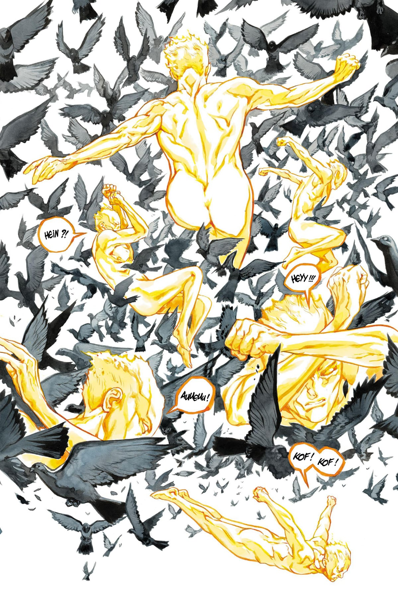
Luminary est né d’une très très longue histoire, puisqu’elle démarre durant mon adolescence, en... 1980.
J’ai 13 ans et je commence déjà à me rêver auteur de BD. Depuis 3 ans, je suis un lecteur assidu des publications des Editions LUG, l’éditeur lyonnais qui publie en France des personnages comme Spiderman, Iron-Man ou les X-Men… la rencontre avec les héros Marvel a été pour moi plus qu’un coup de foudre. Une révélation. Je suis intimement persuadé que le super héros sera un jour mon terrain de jeu… et voilà que début 1980, des articles apparaissent dans Strange, annonçant la création prochaine de MUSTANG, un nouveau magazine de Sup’Héros qui regroupera 3 histoires inédites entièrement pensées et imaginées par des dessinateurs et scénaristes français.
Des auteurs français vont créer du super héros !?
J’attends tout ça avec une impatience fiévreuse.
MUSTANG finit par sortir le 5 juin de cette même année et je suis le jour même devant mon kiosque, avide de découvrir la proposition des éditions LUG… et la découverte est belle.
Deux titres retiennent immédiatement mon attention, Mikros de Jean Yves Mitton, qui graphiquement et dans le traitement ressemble beaucoup à ce que j’aime chez Marvel, mais surtout, c’est le Photonik d’un certain Ciro Tota qui me touche bien davantage encore et à tout niveau.
J’en suis d’autant plus surpris qu’on est très loin de l’imagerie habituelle des super héros musclés à l’américaine… les personnages sont fragiles (le héros principal est un bossu méprisé de tous, et ses acolytes, un gamin fluet et un vieux scientifique rachitique aux cheveux et à la barbe blanche) et le dessin est délicat, les corps étrangement fins… et pourtant, tout ça dégage une poésie, une émotion et une puissance jamais vues. Les mois qui suivent confirment tout mon intérêt pour ce Photonik et sa petite troupe de marginaux, au point de le faire rentrer très vite dans le top 3 de mes super héros préférés.
Quelques années passent. Nous sommes maintenant en 1985, je viens d’avoir le bac et je démarre, faute de pouvoir me lancer tout de suite en BD, des études de publicité et marketing. Dans le cadre d’un des cours, on nous demande d’étudier la démarche commerciale d’une entreprise. Je me dis que tant qu’à faire, autant aller étudier la stratégie marketing des éditions LUG, histoire d’en profiter au passage pour prendre un premier contact avec eux.
Ce que je n’avais pas prévu, c’est que dans leur atelier, je croise mon idole, Ciro Tota, petit homme placide de 31 ans... et fou de joie, voila que je me mets littéralement à danser et bondir autour de lui en répétant son nom, un sourire fendu d’une oreille à l’autre. Peu habitué aux rencontres avec les fans (il n’y avait pas à l’époque les séances de dédicaces quasi systématiques qu’il y a aujourd’hui), Tota me regarde avec sidération et me demande ce qui me met dans un état pareil? Je lui réponds que je l’adore et que je rêve moi aussi de faire de la BD... que je veux devenir scénariste…
Et là, il me dit : « Je souhaite arrêter l’écriture de Photonik et ne plus me consacrer qu’au dessin. Est ce que ça te dit de devenir le scénariste de la série ? »
Si ça me dit ???
Ni une, ni deux, je rentre chez moi et j’annonce à mes parents que j’arrête mes études pour me lancer en BD. Pendant un an, je vais travailler d’arrache-pied sur deux histoires de Photonik, essayant de faire évoluer mes compétences assez maigres de l’époque vers un niveau suffisamment acceptable pour que Ciro me présente à Marcel Navarro, le directeur des Editions Lug. Ce dernier finit par lire mon histoire, la valide, me propose un statut classique d’indépendant et là, il me fait une proposition financière pour mon travail et… et je ne sais pas ce qui m’a pris (peut-être que 12 euros (80 francs de l’époque) pour une planche de scénario m’ont paru indécents au-delà de tous les mots,) mais j’ai dit non… pas à ce prix, pas dans ces conditions.
Bien m’en a pris au final, puisque 6 mois plus tard, les éditions LUG mettaient un terme à leurs créations originales jugées trop chères (à 12 euros, la planche de scénario !!!).
Au fil des longues années qui suivent, je reste de loin en loin en contact avec Ciro, gardant dans un coin de ma tête l’envie furibonde de réaliser un jour ce rêve un peu fou d’écrire un Photonik…
Les choses se débloquent en 2013, lorsque les éditions Black and White décident de republier en deux volumes noir et blanc l’intégralité des récits réalisés par Ciro et Jean-Yves Mitton pour Photonik. Connaissant mon amour pour le personnage, ils me demandent de lui rendre hommage, ce que je fais dans une longue lettre pleine d’un amour béa.
A cette lettre, viennent s’ajouter plusieurs fan art de dessinateurs connus, parmi lesquels celui d’un certain Stéphane Perger qui me stupéfie (il est le seul à avoir osé touché le costume pour le moderniser). Le dessin dégage une force et une modernité tout bonnement stupéfiantes.
Je rencontre Stéphane sur un festival dans le sud ouest de la France… et je lui demande si il aurait envie d’aller plus loin que cet unique dessin qu’il a réalisé ? L’idée semble l’enchanter.
Dès le lundi suivant, je demande à Ciro sil il serait d’accord (ou pas) de nous voir nous lancer dans un reboot assez complet et radical de son Photonik ?
Tota est en train de boucler l’ultime histoire du personnage (dont il possède les droits) et il accepte de nous le prêter dès qu’il en aura fini.
En attendant, je commence à écrire ma version, à la fois fidèle et totalement décalée (plus de super vilains, mais des complots, de la politique, du social dans un esprit finalement plus proche d’un Stephen King que du Photonik originel).
A plusieurs reprises, Ciro (séduit par la proposition) me demande quel est l’intérêt pour nous d’appeler ça « Photonik » tant la donne est différente de ce qu’il a écrit ? On lui répète que sans Photonik, jamais nous n’aurions écrit cette histoire et qu’il n’est donc pas question de le priver d’éventuels droits d’auteur, légitimement mérités.
Et puis, les choses prennent une nouvelle tournure. Ciro m’apprend que les éditions Black and White souhaitent conserver le nom Photonik pour réaliser de petites histoires inédites avec divers auteurs. Par contre, Ciro nous autorise à présenter notre récit comme un hommage à ses univers, sans rien demander, à part qu’on change tous les noms sans changer notre histoire.
Sur le moment, c’est une très très grosse déception et puis, avec un peu de recul, je réalise qu’en s’éloignant encore de Photonik, notre récit gagne encore en liberté de ton et en originalité.
Il ne lui manque plus qu’un nom.
Stéphane propose LUMINARY, à la fois une lumière intense dans le ciel et une personne qui guide les gens.
Une excellent définition de notre personnage principal.
LES FRERES RUBINSTEIN
Ce n’est pas exactement ce qu’on peut appeler un projet récent (chez moi, ce sont rarement des projets récents. Plutôt des trucs qui mûrissent depuis des décennies dans ma caboche).
Ça a commencé à germer quand Laurent Hirn, le dessinateur du Pouvoir des Innocents et du Sourire du Clown m’a présenté Fred Ruillier, un de ses copains de promotion aux Arts Décos de Strasbourg.
Fred était à l’époque, graphiste freelance pour diverses agences de publicité strasbourgeoises (retenez bien l’info, ça a une importance vitale pour la suite).
Secrètement, Fred rêve de revenir à ses premières amours, à savoir la BD…
Nous sommes alors en 1994. On se rencontre et c’est une évidence : le garçon est si charmant, son envie si contagieuse qu’il est difficile de ne pas avoir envie de faire un bout de chemin avec lui. Alors, on discute, de nos univers, de nos envies respectives… rapidement, un point commun se dessine : nous avons tous les deux un frère dont nous sommes très proches et qui est notre meilleur ami. Naît de cette constatation l’idée d’une saga familiale entre deux frères qui ont des caractères très différents mais qui s’aiment à la vie à la mort. Un point de départ. Puissant, mais qui sans un contexte ne va pas bien loin.
J’en suis à méditer là-dessus, quand l’ARNAQUE de George Roy Hill, avec Paul Newman et Robert Redford passe à la télévision. L’intrigue se passe dans les années 30 et tout y est extraordinaire : l’époque est géniale, l’ambiance, les costumes, la Mafia, les USA, tout ça forme un ensemble hyper excitant dans lequel j’aimerai bien installer le destin de nos deux frères.
J’en parle à Fred qui adoube aussi vite l’idée et je commence à monter un récit d’aventure avec deux frères de la communauté juive (me basant sur la relation que j’entretiens avec mon frère Yves. Nous avons grandi tous les deux au cœur de la communauté juive de Belfort et nous avons des caractères très différents. Yves est très dans la retenue, la compréhension des risques qu’il prend, alors que moi, je fonce tête baissée en comptant sur ma chance pour me tirer de tous les pièges dans lesquels la vie me fait tomber systématiquement. Ha oui, petit détail rigolo, nous avons chacun un prénom hébreu en plus de nos prénoms usuels. Je m’appelle Salomon et Yves s’appelle Moïse).
Mon idée est que les deux frères deviennent rapidement orphelins de père et de mère. L’aîné Salomon, se retrouve à s’occuper de son brillant petit frère qu’il enferme dans le rêve de ses parents de le voir poursuivre de hautes études, sans jamais se demander ce que veut vraiment faire Moïse de sa vie.
L’histoire s’ouvre sur une ville minière des USA aux mains d’une riche famille qui y règne quasi de façon seigneuriale. Les deux frères sont issus d’une famille très modeste. Salomon est le débrouillard et Moïse, une bête à concours qui fait de l’ombre au fils de la famille régnante. L’histoire se poursuit très vite à New-York où les deux frères, livrés à eux-mêmes, vivent dans les égouts de la ville en compagnie d’une petite troupe de gamins sans famille, tout ça sous la houlette de Salomon qui permet à tout ce monde de survivre tant bien que mal tout en assurant à Moïse une scolarité dans les meilleures écoles de la ville.
J’en suis là quand Fred m’apprend qu’il ne pourra pas faire de BD pour une triste histoire d’impôts et de cotisations sociales trop élevés (il gagne si bien sa vie en tant qu’illustrateur publicitaire qu’il ne peut renoncer à ce travail sans se mettre en danger. En gros, tous ses revenus en tant qu’auteur de BD partiraient la première année dans le règlement des impôts et cotisations sociales dues pour l’année fiscale précédente et il se retrouverait sans rien).
Du coup, la mort dans l’âme, je mets le projet dans ma besace, sans me douter une seconde qu’il va falloir plus de 20 ans pour l’aboutir.
Entre temps, j’ai grandi, j’ai accepté que ma judaïté n’est pas juste un folklore mais bien l’essence même d’une partie de mon ancrage culturel et de l’histoire de ma famille. Je décide de repenser l’histoire des deux frères pour la rapprocher encore de la mienne. J’expurge tout le clinquant et le fantasme américanophile pour parler de la France, de la façon dont les juifs y sont plus ou moins acceptés suivant qu’ils sont riches ou pauvres, venus de l’Est ou du Nord de l’Afrique, la montée de l’antisémitisme alors que nazisme et fascisme grondent aux frontières… je veux aussi parler des camps d’extermination, cette machinerie à broyer les âmes et les corps où Raymond Brunschwig, le propre frère de mon père a perdu la vie à 17 ans avec l’aide de la gendarmerie et de la police de mon pays… La petite ville minière américaine devient un coron du nord de la France et mes deux frères, les fils de deux immigrés juifs polonais venus trouver en France un bonheur qu’on leur refuse dans leur propre pays et qu’ils pensent avoir enfin atteint…
J’ai toujours voulu présenter ce projet comme un feuilleton (plus encore qu’une série). Je proclame à qui veut bien l’entendre que c’est mon grand projet en 1000 pages (au final, il en fera un peu moins de 700, mais c’est déjà énorme, surtout à une époque où le one-shot et le roman graphique sont rois et où la série effraye les éditeurs qui n’arrivent plus trop à en installer de nouvelles dans un paysage déjà très encombré par la surproduction).
Il faudra cependant attendre la collaboration avec Etienne Le Roux sur la Mémoire dans les Poches et son idée de monter un studio à deux dessinateurs (un qui réalise les storyboard, les crayonnés et les personnages, un autre qui se consacre aux recherches documentaires et aux décors (idée qui lui est venue pour réaliser en 5 ans les 10 albums de la série 14-18)) pour que l’idée de réaliser une longue saga dans des délais acceptables par un éditeur et les lecteurs voit le jour… enfin !!!